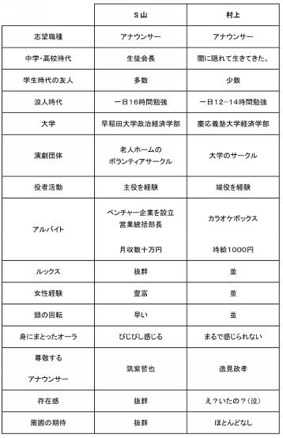
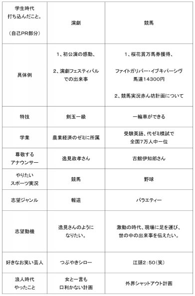

| アナウンサー物語 | |
| 石井貴士 | |
| kabusikigaisyakokorocinderella (2016) | |
２０１６年 ８月吉日
アナウンサー物語は、石井貴士がアナウンサー４年目～５年目のとき（２０００～２００１年）に書いた、石井貴士の自伝です。
今から１６年前の石井貴士が書いた文章を、そのまま残しています。
石井貴士の処女作は、２００３年１１月１０日発売の『オキテ破りの就職活動』という本ですが、
この本が、幻の処女作ということになります。
村上という名前は、石井貴士のアナウンサー時代のペンネームです。
会社員としてアナウンサーをしている以上、石井という名前を使うわけにはいかなかったので、村上として、文章を書いて、ホームページにアップしていたわけです。
結局、入社４年目のときに、上司にこの文章を書いたホームページが見つかってしまい、ものすごく怒られました。
ひどい文章だ、恥ずかしくないのか、レベルが低い、幼稚な作文だ、など、考えられる限りの罵声を浴びせらせました。
いっそのこと、クビにして欲しいと思いましたが、クビにしてくれなかったので、自分で会社を辞めて、作家を目指すしか、ありませんでした。
作家としての一歩を踏み出した、貴重な作品が、アナウンサー物語です。
その後、２００９年には、『本当に頭がよくなる１分間勉強法』が年間ベストセラー１位になり、２０１６年現在は、６５冊、２００万部という実績になることができました。
その第一歩となったのが、この『アナウンサー物語』なのです。
今後も、一生文章を書き続けていきたいと思っていますので、
ぜひ、石井貴士の本を買って、応援してくださいね。
（株）ココロ・シンデレラ 代表取締役・作家 石井貴士
目次
なぜ、アナウンサーになりたいと思ったのですか？
就職活動中、アナウンサー受験者は、必ずといっていいほど面接官にこの質問をされる。
そして、アナウンサーという人種に初めて出会ったという人も、この質問を我々アナウンサーに対して投げかける。
大変難しい質問である。
ある日突然、インスピレーションで、"アナウンサーになりたい"と思ったともいえるが、やはり、歩んできた人生のなかで、私をアナウンサーに駆り立てる、 "沢山の引き金があった"というのが正解に近い。
だから、"なぜ、アナウンサーになろうとおもったのか？"
そう聞かれたとき、決まって私はこう答える。
"一言ではいえません。"と。（笑）
ということで、一言では言えないので、自伝というかたちでつづりたい。
決して貧しくはなく、どちらかといえば裕福な家庭に生まれた。
３才のときは、まさに天才児。
３才にしてアルファベットが読み書きできる子供など、いまでもそうはいないだろう。
だが、幼稚園に入って、初めての挫折を経験した。
なんと、子供ながらに人間関係が苦手で、いじめが原因で、幼稚園を中退したのだ。
楽しいはずの幼稚園。だが、自分は嫌いだった。
女装をさせられたり、フォークダンスで、自分だけ手をつなぐ相手が男だったり（これは自分の相手もそうだが。〔笑〕）、３時のおやつが自分だけもらえなかったり。。。
なんだか、自分だけが嫌われているように感じた。
そんなわけで、このときは（このときから？）人間が嫌いであった。
自分の殻に閉じこもったっていいじゃないか！と一種悟りを開いていた暗いガキであった。
幼稚園に行ったせいで、自分はそんな内気な子供になってしまった。
いつもうつむいて歩いていたのを覚えている。
（考えると、自分の猫背のルーツはこの頃であった。）
小学生時代は、転校ばかりしていた。
まず、静岡で１，２年を過ごす。
このころ、"自分が強くなればいじめられるはずがない！"と思い、空手をはじめた。
そして、せっかく静岡にいるのだからと、サッカークラブにも所属した。
だか、またしても人間関係がうまくいかず、いじめられ、退部に追いこまれた。
なんと、自分のサッカーボールにウンコがたっぷりとくっつけられていたのだ！
しかも、人糞だよ！！１回は我慢したさ。サッカーボールも買い換えた。
でも、２回目に人糞攻撃に遭ったときは、さすがに愕然とした。
泣く泣くやめざるを得なかった。くそー！（笑）
なんと悲しい小学生だろうか？
空手もウンコには対抗できず、なすすべがなかった。。。
それから、３年生は、相模原に引っ越した。
しかしここでも、悪夢が襲う。
なんと、同じクラスの男から、ストーカー被害にあったのだ。
いつも、学校が終わると家までついてきて、
"家にいれてくれるまで、帰らない！"といって、家の前で座り込みをするのだ。
しかも、"もし、帰ってほしいなら１００円くれ！"と言ってきかない。
とんでもない小額、いや小学３年生だ。（笑）
もう逃げ出したい！そう思った矢先、運良くまた引越しがやってくる。
今度は東京都町田市。
"まずい！このままでは暗い人生を歩んでしまう！今度の学校では明るくなろう！"と決意をしての転校。
なんと、集会委員の委員長になり、全校朝礼で、はじめて人前でしゃべる。
そして、"俺が学校を変えてやるぜ！"と意気込み、なんと生徒会副会長に立候補。
結果、３票差で当選！（ぎりぎりだけどね。）
さらに、一輪車クラブを自ら創設！初代部長になる。
毎日、傷だらけになりながら一輪車を練習し、その結果、学校で一番早く乗れるようになった。
今思えばここが人生の絶頂期かもしれない。
なんと積極的な小学生だろうか？小学生の鏡だ。
小学４～６年は、本当に幸せだった。毎日が楽しかった。
友達も沢山いたし、クラスの人気者だった。
まさか、この先とてつもなく辛い人生が待っていようとは、この時は想像だにしなかった。
中学は地元の公立中学に入学。
部活は"わらべ遊びクラブ"に入部した。
このクラブは、けん玉、ベーゴマ、メンコたまにゴム跳びをやったりするクラブだ。。
なぜか、メジャースポーツでも、マイナースポーツでもなく、あえて"けん玉"に没頭。（笑）
おかげで、今では"けん玉一級"です。
はっきりいって、成績は中の下。
そして、人と同じだけやっても全く成績が上がらない。
もともと、人並みの頭の良さが、自分にはないことを認識していた。
何をやっても人並み以上はできない。
運動神経に至っては人並み以下だ。
では、自分のとりえは何なんだろう。
考えたが、自分にはとりえなど１つもない。（強いて言えばけん玉くらいか？）
そこで、幼き村上少年は考えた。
先天的なとりえが全くない。
それならば、後天的にとりえを作っていくしかない！
と決意を固め、あることを始めた。
そう、それはほかでもない、"受験勉強"だった。
やれば報われる。勉強は裏切らない。そう信じた。
中学生活、勉強に賭ける。
３年後、慶応、早稲田の付属高校に入れば、モテモテの人生が送れるはず！
楽しい人生を将来送るためには、中学時代を犠牲にし、早慶に入るのがベスト！
これが当時の自分が導き出した結論だった。
タダでさえ凡人の自分が、早慶合格を目指す。並大抵のことではない。
だから、人の倍、勉強しなくてはならなかった。
塾に通いまくった。
中１、中２のときは週に３日。中３は、なんと週６日！異常だろう。
月曜以外はすべて塾！プロ野球の選手のような生活である。
しかし、自分は凡人。やるしかない。
勉強のしすぎで、１．２あった視力は０．１にまで落ち、メガネが欠かせなくなった。
肩が凝り、針治療にも通った。
目の使いすぎから来る頭痛で病院にも通った。
長時間座っているため、痔になったのも中学時代であった。
その結果、偏差値は７０を越え、早慶合格ラインに届くまでになった。
中学３年の春の校内模試では学年で２位にまでなった。
やれば報われる。そう感じていた矢先にアクシデントがおきる。
中学３年の９月、受験前の大切な時期、まさに悪夢だった。
なんと、体育のバスケの時間に、左の鎖骨を骨折し、ギプス生活を送る羽目になってしまったのだ。
上半身ギプスでぐるぐる巻きの状態だ。
といっても、動きづらくて勉強ができないのではない。
なにしろかゆくて全然勉強に集中できないのだ！
（あのかゆさは、ギプスをはめたことのある人しかわからないだろう）
しかし、成績はなかなか落ちなかった。
まだまだ、かつての蓄積が効いていたのである。
しかし、中学３年の１月。
目の前が真っ暗になった。
模試を受けると、なんと偏差値が５５！！一気に１５もダウン！
そう、３か月で、いままでの勉強の蓄積を使い果たしてしまったのである！
Ｉ ＡＭ ＮＯＴ ＷＨＡＴ Ｉ ＷＡＳ
この英語が、まさか悪い意味で自分に当てはまるとは、おもいもよらなかった。。
"人は、３ヶ月で、ほとんどのことを忘れる。"脳の研究の第一人者、エビングハウスの言葉である。
そして、いよいよ２月。受験だ。
あんなにすらすら解けていたはずの問題がほとんど解けない。。
なんと早稲田、慶応ともに全滅。。。。
ああ、塾に週に６日も通っていたのはなんだったのか。
呆然と立ち尽くしてしまったのを今でも覚えている。
唯一、合格したのは、一番つらい人生を歩んでしまいそうな、私立の進学校。
しかも男子校だった。。。
女の子はいない。まさに大学受験オンリー。そんな学校だ。
楽しい人生を送るはずが、なまじ勉強に精を出してしまったがために、受験校にいくはめに。。。
楽しい高校生活など、想像がつかない。
せっかく中学生活を犠牲にしたのに、結局、得たものはさらなる苦痛ではないか！
絶望にくれた村上少年は、なんと卒業アルバムを燃やしてしまった。
"思い出の詰まったものを、なんてことするの！"そう言って親は怒った。
しかし、考えてもみてくれ。
思い出などあるはずがなかろう。
親に強制されたわけでもない、自分で中学生活を犠牲にすることを選んだのだ。
なんのとりえも無い自分。だからこそ、勉強にすべてを賭けたのだ。
その結果が不合格だったのだ。
骨折は言い訳にならない。
結局は自分の精神力の甘さである。
そう思って，精神力の足りない、過去の自分と決別したかった。
だから、卒業アルバムは、村上少年の犠牲となった。。。
そのため、中学時代の写真は手元には一枚も残っていないのである。
高校入学。その前に、高校受験組は、春休みにはずっと教室に缶詰状態にされ、補修を受けるのがならわしだった。
なぜなら、中高一貫教育の学校に高校から入学するということは、スタートが完全に出遅れているということなのだ。
（スタートというのは、もちろん"東大受験にむけての"と言う言葉が省略されていることはいうまでもない。）
せっかく高校に入学したら一息つけると思ったのに。。
なんと中学入試組の連中は、中学３年のときに、高校２年の模試を受けて、全国で上位者に名前が載っている連中ばかりなのだ。
異常だ。
（だが、結局は高校入学者のほうが、基礎ができているため、２年の終わり頃から追いぬくと言う傾向がある。）
とにかくみんな化け物のように、問題が解ける。
休み時間はだれも遊んでいない。校庭で遊んでいるのは中学低学年だけ。
休み時間は、日本史組、世界史組に別れて問題を出し合うのが当然の光景だった。
なぜ、彼らはここまで受験に駆り立てられるのだろうか？
わからない。だが、みんな勉強している。だから、まわりに流される形で勉強する。
勉強していない奴は友達にしないという、そう言う空気が流れていたような気がする。
しかも、体育の時間は奇妙な光景が見られる。
バスケ、サッカーなどで、ボールをパスすると、よけるやつが沢山いる。
なぜなら、ぶつかったら危ないからだ。ボールに触れるだけの運動神経が備わっていない人間が多いのだ。
この空間では、中学時代、体育の成績が３と２しかなかった私でさえ、運動ができる部類にはいった。
しかも、プールは水泳部以外使用禁止。理由は"おぼれると困るから"である。
なお、修学旅行のときも、海では水深３０センチ以上のところは遊泳禁止だった。。。
（本当に水深５０センチのところで、おぼれて亡くなった生徒がいたため。）
はたして、これが青春だろうか。わからなかった。
しかし、いまを犠牲にして、将来、早稲田、慶応にいけばきっとモテるだろう。 きっと、人生バラ色だ。きっと一流会社にいって、きっと美人の嫁さんをもらえるに違いない！
そういう幻想をもっていて、全く疑わなかった。。
塾には２年から通い出した。
そこで、ある先生の授業を受け、英語の偏差値が、一気に高３、浪人生レベルで７０になった。
このころ、受験テクに走る。（和田秀樹シリーズはすべて読破！）
私大文系に絞り、数学は切った。世界史で勝負だ！
もともと人よりできないのだから、科目を絞ったほうが効率良く勉強できるはず！
そう考えた。
ともに偏差値は７０を越え、早稲田模試では、政経志望者のなかで２位になった。
もはや、無敵の受験王だ。判定では、早稲田、慶応ともに合格確実だった。
だが、ここでまた悲劇が襲う。
塾で知り合った２浪生たちに、
"おまえは合格確実だからいいよな。ちょっと俺の悩み聞いてくれよ。俺、３浪したらどうしよう。。"
などと言われて、先輩の愚痴に、毎日５時間くらい付き合わされたのだ。
"いいじゃないか。そんなに勉強しなくても。おまえは確実なんだから。メシくらい付き合えよ。"
などといわれて、 "まあいっか。先輩も確実って言ってくれてるし。。"
さらには "大学にいったら何をして遊ぼうか。ちゃらちゃら女のコと遊びたいなあ・・・"
などと、大学に合格した後のことばかり考え、浮かれていた。
大学入試、１ヶ月まえのことである。
（いま考えてみれば、２回も受験で落ちている２浪生の合格確実という言葉を信じた俺っていったい。。。。。。。）
そして、入試。
早稲田政経、法、商、慶応経済、法、商。
どれも確実だといわれていた。模試ではトップクラスだった。合格可能性８０％のところを６つ受験している。
すべてに落ちつづけるということは、
（５分の１）×（５分の１）×（５分の１）×（５分の１）×（５分の１）×（５分の１）の確率である。
計算すると、なんと１５６２５分の１！全部落ちるというのは、１万５０００回やって、一度の確率なのだ。
だが、すべて落ちた。。。。受験は確率ではなかった。 涙が止まらなかった。
塾から進路調査の電話が入る。"村上さんは何校受かりましたか？"
じゃかましいわい。"ゼロだっつーの！"
かなり落ち込んだ。何のために進学校にまでいったのか。何のために６年間も青春を犠牲にしたのか
布団にうずくまりながら、自問自答を繰り返した。
よく考えてみれば、落ちた原因は、はっきりしていた。
みんなが追いこみをしているとき、自分は勉強していなかった。だから落ちた
自身過剰になりすぎていた。だから落ちた。
模試はあくまで模試なのだ。模試を受けてから、本番までが大切なのだ。それに気づかなかったから落ちた。
人のことを心配している余裕などなかったのに、余裕があると勘違いしていた。だから落ちた。
またしても、精神力の甘さだ。２浪の先輩のせいではなく、自分のせいだ。
高校受験のときと同じではないか。受験前は気を抜かないと、あれほど決めたではないか。
過去の失敗から何も学んでいない。それが駄目なんだ。
そうだ。俺は駄目な奴なんだ。何のとりえもないんだ。だから勉強を始めたんじゃないか。
これは確かに人生のなかで、大きな挫折だ。だが、"乗り越えてみせろ！"そういう神様のお告げだ。
浪人生活、絶対気を抜かないで頑張ろう！
村上、初めて本気で決意し、浪人生活に突入する。。。
浪人が決定した直後、大学合格という栄光をつかむために、今までの自分はなぜ駄目だったのか、もう一度反省してみた。
足りなかったもの、補うべきものは何なのか。考えてみた。
中学時代は、骨折を言い訳に、入試直前に勉強せずに落ちた。
高校時代は、２浪の先輩からの誘惑を言い訳に、入試直前に勉強せずに落ちた。
ともに、１２月までは、トップクラスの成績だった、にもかかわらずである。
原因は何か。精神力の甘さ。いつも言い訳を考えて生きる。勝って兜の緒を締めない、詰めの甘い性格。。
もう失敗は嫌だ。２度とだ。今度こそ絶対に受かる！受かるためなら、どんな苦痛にも耐えよう。そう心に誓った。
今まで（中学、高校時代）も、青春を犠牲にして勉強だけをしていた。自分ではそう思っていた。
だが、ひょっとするとこれも自分勝手な思い込みではないのか？
確かに、週の半分は塾に通っていたし、家でも勉強に費やす時間がほとんどで、勉強を沢山していたことは事実だ。。
しかし、果たして"他のものを捨て、すべてを受験に賭けていた"と胸を張って言えるだろうか。
思えば、テレビは見た。ゲームはした。友達の家に遊びに行った。友達と話した。電話をした。カラオケに行った。
ボーリングもした。女の子とお話しがしたいと思って、合コンにいった。
塾の合間を縫って、勉強の合間を縫って、これだけの人間らしいことをしていたではないか！
確かに世の中の人に比べれば全く遊んでいない部類に入ると思う。それは確かだ。
だが、もともと自分は、何をやっても人よりできない、本当にダメな人間なのだ。
ダメ人間が人より上を目指す。並大抵のことではない。
そのためには、他の人より、何倍もやらなければ追いつけない、追い越せない。
他の人が遊んでいる間も自分は努力し続けなければならない。そのことは自分自身わかっていたんじゃなかったのか？
にもかかわらず、たとえ少しであれ、人並みに遊んで、受験合格という人並みの幸せを得ようとは虫が良すぎるのではないのか？
またしても、まだまだ自己認識が甘い。甘すぎだ！
そこで、この大甘な自分を捨て去るため、人生最大の決断をした。そのくらいしなければならなかった。
生まれ変わる！そう決断したからだ。
まず第一に、女と一言も口きかない計画を実行した。
１年間、女という女とは口を利かない。思春期の男が一番好きなものを絶つ。
人の３大欲、食欲、性欲、睡眠欲。このうちの一つ、性欲を一年間絶とう。
１８歳。この世の１８歳には、青春まっさかりという人が大半に違いない。
彼女だってほしいし、デートだってしたい。だれしもそう思うはずだ
だから、あえてこの計画を実行に移した。
これは、一種の願掛けでもある。これだけつらいことをしてまで頑張ったら、きっと合格という形で報われるに違いない。
ナンセンスと思う人は多いかもしれない。だが、自分は天才ではない、凡人なのだ。
このくらいしなければ自分は合格するはずがない。そう考えた。
もし、女の子としゃべったら、惚れるかもしれない。そうしたら、その女の子のことを考えてしまう。
例えば、１日、２時間その女の子のことを考えたとしたら、１ヶ月で、６０時間のロスになる。
（もし、英単語１つを１分で覚えられるとして、１×６０×６０＝３６００、３６００単語も覚えられるではないか！）
いや、時間のロスなどではない、恋愛は素晴らしい、何にも替えがたいものだ。そういう人は多いだろう。
そんなことは百も承知だ。自分もそう思う。
だが、自分に恋をする資格などない。あるはずがない。
なぜなら、自分は人生の負け犬だからだ。すでに高校受験、大学受験と、２度も人生の大勝負に負けているのだ。
こんな負け犬に惚れられた女はきっと不幸だ。相手の女をきっと不幸にする。だから、俺は絶対恋をしない。
相手の女性を幸せにする自信がついたら、一人前の人間になったら恋をしよう。そう心に誓った。
この一年は、まさに出家すべきだと考えた。今までの自分は負け犬だ。そんな自分に別れを告げなければならない。
生まれ変わらなければならない。今の俺は本当に駄目な人間だ。こんな自分に恋などする資格はない。
自分に打ち勝って、それから本当の恋を探そう。そう決めた。
結局一年間、"この席空いてますか？"という言葉以外は、女の子と口を利かなかった。。。。（実話です！）
（注・・・母親、妹、祖母は除きます。）
そして、さらに実行したのが、外界シャットアウト計画である。
世の中で何が起ころうと自分には全く関係がない。だから、新聞、テレビを、１年間一切見なかった。
受験に関係ないものは必要ない。なぜなら、自分は人間ではない、人間になるために出家している修行僧だからだ。
人間らしい生活を送る前に、負け犬の自分は人間ではない。
晴れて受験に合格して、負け犬からおさらばして、自分のことを人間であると自分自身で認めることができるようになった時。
そうなった時、初めて外界と交渉を持とう。
そう決断した。
さらに、１年間、友達を絶対に作らない計画を実行した。
現役のときに、先輩と話しすぎて落ちた、その反省である。
こんどこそ失敗から学ぶ。
友達がいたら、話をしなければならない。これは当たり前だ。
人と話している時間というのは本当にもったいない。
そんな暇があったら、英語の長文を声に出して読んだほうが、有効な時間の使い方だ。
まあ、それもあるが、だいたい浪人生の話など、ほとんどが愚痴だ。無駄な話だ。
そんな話をする暇があるなら、明日へ向かって、ひたすらもくもくと努力するほうがいい
だいたい、話をしていたから受験に落ちたなんて、話をした相手にも失礼だ。
そもそも、今の負け犬の自分には、人間と話す資格さえない。
自分が一人前の人間になってから友達を作る。友達を作るのは大学に合格してから。そう決めた。
考えてみれば、今の自分は人間ではない、人間になるための修行の身なのだ。
そう、例えていうならベム、ベラ、ベロなのだ。
はたして、ベム、ベラ、ベロに友人がいたであろうか？
"人間の友達はほしいけど、僕は妖怪人間だし。。早く人間になりたい！"そう願う気持ちは妖怪人間も自分も、全く一緒だった。
なんとまあ、妖怪人間と一緒の気持ちを味わった浪人時代であった。
さらに、友達から電話がかかってきたら、親に"いない"と言ってくれとたのんでいた。
そしてついに、電話には一年間でなかった。
電話が鳴ってもでなかった。ちなみに家のチャイムにもでなかった。
そしてとうとう、この一年は親、兄弟以外とは全く口を利かなかったのである。
まさに修行僧としての一年を送った。
"今日より明日。久しぶりに人間をみたような気がする。"これは、北斗の拳のケンシロウのセリフである。
今日、今、目の前にある米を、いま飢えていても食べずに、のちのち実るのを夢見て種播きに使う。
これが人間のあるべき姿だと、そのことをケンシロウから教わった。。。
浪人が決定し、いままでの自分とはおさらばしようと思った。
そこで、志望校も大幅に変えることにした。
今までは早慶文系。
だが、浪人したのだから、思い切って、最高学府、東京大学を目指してみよう。
そうすれば、浪人したかいがあるってもんだ。早慶に受からなくてよかった。。そう思えるに違いない
浪人したことに自分自身で意味を持たせ、さらなる強大な敵に立ち向かっていく。
そして、浪人を通じて、ひとまわりビッグな人間になろう！
３月１０日。浪人が決まり、決意した東大受験。
だが、もちろん、生半可なことではない。いままでは、英語、国語、世界史しかやってこなかった。
東大の受験科目は、英語、国語、数学、世界史、地理であった。
さらに、センター試験では、地学が必要だった。
すなわち、新たに、たったの１年間で、数学、地理、地学の３教科を、偏差値２５から、７０に上げなければならないのだ。
しかも、英語、国語、世界史でさえ、選択肢中心から、記述・論述式へと問題形式が変わる
そんな苦難はあるだろうが、自分が生まれ変わるためだ。やり遂げようと神に誓う。
そんななか、浪人が決まった直後の３月下旬に、代ゼミの浪人生だけで行う、全国模試が行われた。
科目は、英語と国語。各２００点満点、計４００点満点。
そこで、なんと村上少年は、英語２００点、国語１９８点、計３９８点で、
全国７万人中、ぶっちぎりの一位を獲得したのだ！
すごい！頭いい！と思う人もいるかもしれない。
しかし、考えてもみてくれ。これほど馬鹿な奴はいないだろう。これだけの成績をとりつつ、合格してないんだよ！俺は！
この試験は、言いかえれば、
"浪人決定直後の３月というこの時期、入試に落ちた人間なかで、だれが一番合格に近かったですか？"
という試験なのだ。
"一番本番に弱い人間は誰ですか？ 入試の時、一番実力が発揮できなかったのは誰ですか？" そういう試験だ。。。
そう、それが自分だった。
いままでの人生のなかで、テストで一位をとって涙を流したのは、これが最初で最後であるのはいうまでもない。
村上少年の修行が始まった。自分に課したものは、一日１２～１４時間勉強すること。
基本的には１４時間、最低ラインが１２時間と決めた。
７時に起きる。食事をして、栄養ドリンクをカーーーッと飲み干す。
朝７時３０分には電車に乗る。電車のなかは１時間３０分勉強ができる。ここは、暗記ものが中心だ。
９時に予備校について、勉強。予備校の授業がないときは、図書館に耳栓をしてこもった。
だいたい、９時に閉館だ。そして、一時間半かけて家に帰る。電車のなかは、一日の復習である。
夜１０時３０分。食事をして、１２時まで勉強して、寝る。
疲れて眠いときは、手の甲やふとももにシャーペンを刺して、睡魔と戦った。このくらい当然だった。
だいたい、睡眠時間は７時間を目安にしていた。
ここで、ひとつ言い忘れたことがある。そういえば、風呂には一ヶ月に一回しか入らなかった。
なぜなら、時間がもったいないからだ。１回風呂に入ったら、３０分はかかる。
これを時間の無駄といわずになんと言うのか。
３０分あれば、その時間を勉強に回せば、１ヶ月で、０．５時間×３０日＝１５時間
すなわち、一日余分に勉強したのと一緒の計算になる。
風呂には入らないほうが効率的に決まっているではないか！
アフリカの人は、１年に１回くらいしか風呂に入らないんだから、自分も入らないでいられるはず。そう考えた。
そもそも風呂なんて、人間が入るものだ。自分はまだ、ベム、ベラ、ベロ。
人間ではない。だから風呂には入らない。
受かったら、ゆっくりと風呂に入ろう！そう決めた。
そんなある日、東大のパンフレットを見ていて、一際惹かれる学部があった。
そう、それは考古学部だ。
文Ⅲ。考古学部。定員１０名。就職にあまり適さず、人気はなく、希望すればほとんどいける学部。夏は北海道で発掘実習がある
しかも、東大ということで、全国各地から、有名な先生がレクチャーしてくれる。
そう書いてあった。なんと素晴らしいんだろう。世の中の政治、経済問題とは向き合わずに、あえて、過去を調べつづけるなんて。
世捨て人の自分にはぴったりだ。そう思って、考古学の本を図書館で探していたら、アトランティス大陸の本を見つけた。
執筆者 東京大学名誉教授００と書いてある。
もともと、古代文明には興味があり、雑誌ムーを読んでいた時代があった。
そこで村上少年はひらめいた。そうだ、俺は、アトランティス大陸とムー大陸の研究家になろう。考古学者になろう！
他の人とは違うことをして、１つのことだけ極めるのも面白い。
ある分野の権威になることで人生を送れるなら、自分の存在意義ができる。この世に生まれてきたことに意味ができる。
後世に名を残すことができるかもしれない。
そのためには、絶対に東大文Ⅲに行くんだ！いや、俺が行かなければ誰が行くのだ！
そう決意し、さらに、非人間的な禁欲生活に走っていく村上少年であった。
数学の成績は、７月の時点で偏差値７０になった。
たった３ヶ月で、中学１年の教科書からやり直し、受験レベルまで引き上げたのだ。
偏差値２５から７０へ。
１日１２～１４時間勉強すれば、このくらいには誰でもなる。
そう言いきれる。
だが、やはりこれでも数学は苦手であった。
偏差値７０というのは、東大入試においては、全く意味をなさない。
なぜなら、東大の数学の問題は、偏差値でいうと、７５を越えたレベルからの出題だからである。
灘、開成、ラサールの連中たちは、中学１年から、東大レベルの数学ばかりをやっている。
果たして、たったの１年で、"追い越す"とは言わないまでも、"追いつく"ことはできるのだろうか？
いや、やはり困難だ。
そこで考えた。
傾向から絞れば、少なくとも足はひっぱるまい。
調べてみると、東大の数学は、８０点満点で、４題の出題。（１問は２０点）
東大の数学の、例年の合格ラインは２０点。それだけ取れればおつりが来る。
完答でなく、途中点の６点だけでも受かるらしい。
東大の問題は、東大合格者でもそのくらいしか解けないレベルなのだ
まず自分は解けない。
偏差値７０ごときでは、太刀打ちができないのだ。
そんななか、毎年、空間図形の問題が必ず１問でる。この傾向は２０年変わっていない。
ならば、空間図形のスペシャリストになろう。そうすれば、２０点は獲れる。
そう確信し、空間図形の問題ばかり、必死になって５００問くらいはこなした。
その結果、空間図形の問題に限ってだけは、灘、開成レベルまで引き上げることに成功したつもりであった。
英語は特別の方法をとった。まさに、科学的な受験テクニックだと自負している。
まずは英単語。
ほとんどの人は、英単語は書いて覚えろ！そう教えられたはずだ。。。。俺に言わせれば完全なるアホだ！
このやり方では、１単語につき、１分はかかってしまう。そして、復習にもその何倍も時間がかかる。
では、自分はどうだったか。
英単語は、書かずに覚えた。絶対に書かない。
そのかわり、１単語につき１秒、声にだして読む。それを、１日５００単語、５回繰り返す。
すると、５００×１秒×５＝２５００秒。つまり、約４０分で、５００の単語に目を通すことになる。
書いて覚える場合は、１分で１単語、４０分で４０単語。
しかし、自分は４０分で５００単語。その差は１２．５倍！
しかも、書いて覚える場合、稼動するのは触覚（手）、視覚のみ。
だが、書かずに声を出す場合は、味覚（口）、聴覚、視覚の３つ。その差は１．５倍！
当然、他の受験生に負けるはずがない。
東大の問題でも、自分の知らない単語は、１つあれば多いほうであった。
英語の長文問題。よく、先生は、"１日１つずつ長文を読みましょうね。継続は力なりです。"
などとたわけたことを言う。甘い、甘すぎる！
自分は、１日２０長文は読んだ。すべて単語は頭に入っているわけだから、辞書はほとんど引かずにすむ。
だいたい、１長文につき、かかる時間は１０分くらいだろうか。
普通の人は、辞書を引きながら読むから、１時間（６０分）くらいかかる。その差は６倍！
だから、結果として、１日１長文しか読まない人間とは、２０倍の差がつく。
１日２０長文読むと、だいたい、３日で一冊の参考書を終える計算になる。
すべての問題集、過去問をやり尽くしてしまったらどうしよう。
自分のペースに、果たして問題集の出版ペースが追いつくのだろうか？
そんなことを心配していた。もちろん、そんなことはなかったが。。。
国語。
まず、漢字はやらない。なぜなら、配点が低いから。たったそれだけの理由だ。
１問２点で、３問出たとして、６点。
何もしなくても、２点は獲れるだろう。そして、絶対知らない漢字がおそらく１問はでるだろう。
ということは、いくら漢字問題というのは、いくら頑張っても、たったの２点しか上昇しない、とても効率の悪いものなのだ
学校の先生は、"漢字は社会に出たら役に立つから、しっかり漢字練習しましょうね！"などというが、そんなことを言っているから、所詮３流大学の教育学部にしか合格できないのだ。
悔しかったら東大の教育学部に合格して教員になってから、そんな言葉を吐いてもらいたい。
努力の割に報われない。それが漢字問題。ならば捨てるに決まっている。受験には潔さが必要だ。
（だからいまでも、ニュースに出てくる漢字が読めずに怒られることが多い。。）
現代文は、とにかく問題を解きまくる。東大向きの問題集は、すべてやった。過去問も、２０年分はすべて解いた。
古文。これは、単語暗記で、かなりの問題が解ける。古文、漢文は、努力でなんとでもなるので、特に必勝法はない。やるだけ
といっても、試験にでそうな古文はほとんど読んでしまい、入試でも、一度見たことがある古文ばかりだった。
世界史、地理、地学も、まあ、普通に、人の倍やっただけで、特別な方法は取らなかったと思う。。
その結果、慶応模試で全国一位を獲ったり、早稲田模試でも全国１０位以内には入った。
東大の合格可能性も、５０％は越えるようになった。
もはや、落ちるはずがない。自信が確信に変わっていった。
試験１ヶ月前。
失敗から学ぶ。失敗は２度と繰り返さない。もう気は絶対に抜かない。そう固く神に誓った。
あいかわらず、友達はいない。人ともしゃべらない。電話にも出ない。
外界を遮断し、もくもくと勉強をしていた。この時期になると、女の子と口を利かないことなど当たり前になっていた。
なんといっても勝負弱い性格。負け犬根性。これを捨て去るための一年間だ。
"なんの、まだまだだ。"そう自分に言い聞かせ、手の甲にシャーペンを刺し、夜な夜な勉強する。
もはや、自分のふとももや手の甲は、かさぶただらけになっていた。
日本人の習慣に"入浴"というものがあることも、このときはもう忘れていた。
いよいよ受験だ。
親が、"２浪したらまずい、すべり止めを受験しろ！"という。
嫌だ、大丈夫だ。絶対に落ちないから安心してくれ！ そう説得しても、親は聞く耳を持たない。
それはそうであろう。息子の勝負弱さを知っているのだから。。。（笑）
しかたなく、中央大学文学部を受けた。偏差値は６０くらい。落ちる要素は一つもない。
まあ、景気付けに１校合格通知をもらうのも悪くないか。
でも、自分のせいで、他の第一志望の人が１人でも落ちたらかわいそうだなあ。
本当に、申し訳ないなあ。。。そんなことを考えながら受験した。余裕シャクシャクであった。
しかし、なんと見事に落ちたのである！！
偏差値７０をほとんど下回らなかった自分が落ちた。
代ゼミで、総合１位を獲っていた自分が。何万人中のトップである自分が。
しかも、今回は以前と違って、気を抜いていないのにもかかわらず、である。なんという勝負弱さなのだ！
俺には死神でも憑いているのか！ここまで勉強して受からないのか！
ほとほと自分に愛想が尽きてきた。。。（このショックは１日１２～１４時間勉強した人しかわかるまい！！）
だが、ここでくじけていたら、以前のじぶんと変わらない。また、負け犬だ！負け犬はもう嫌だ！
原因はなにか、究明してみよう。これがわからなかったら、他もまた落ちるかもしれない。そう考えた。
なんと原因は、以外にもあっさり突き止めることができた。過去問の練習不足。これだけだろう。それ以外にはない。
中央大学の入試問題の形式が、選択式なのか、記述式なのか。
そんなこともわからずに、偏差値だけみて、その大学を受けていた。それが敗因だ。
では、もう落ちまい。早慶の過去問は、１５年分はやりこんでいる。今度こそは大丈夫だ。気を引き締め直す。
慶応文学部。英語２００点、社会１００点、論文１００点。計４００点満点。
問題がすらすら解ける。英語はまず、１８０点は固い。社会は９０点は確実。論文は８０点はいっているだろう。
３５０点以上はあるはず。
名前を書き間違えなければ、合格は間違いない。そう確信した。
結果、初めての合格！！！絶対に受験生のなかで、一番得点が高かったに違いない。トップ合格に違いない。
いまでもそう思っている。（まじで受験でトップ合格の人の名前を公表してほしいくらいだ。）
そして、慶応商学部。英語、数学、社会すべてにわたって、全然解けない！パニックになった。
なんて勝負弱いのだ！しかし、なんと合格！
他の受験生がもっとできなかったのだろう。それ以外に理由などない。
慶応経済。そこそこできた。でも、合格レベルにはない。そんな手応えだった。
なぜ、本番になると、いきなり問題ができなくなるのか。
別に、緊張しているわけではない。模試では解けるのに、本番では解けないんだ。
生まれもった勝負弱さなんだろうか。
結局、慶応経済は補欠合格だった。補欠合格は、Ａ，Ｂ，Ｃ，Ｄ，Ｅ，Ｆ，Ｇ，Ｈ，Ｉまでが発表された。自分はなんとＧ。
例年は、Ｅまでしか繰り上がらない。ああ、なんと勝負弱いのか。。。。
早稲田政経。模試では全国２万人中、トップ１０に入っていた。だが、なぜか落ちた。。。
早稲田法学部。模試では、こちらも、２万人中、６位という成績を残していた。だが、ここも落ちた。。。。
早稲田商学部。これも、模試では２万人中２位だった。だが、落ちた。。。。。
模試など本当に当てにならない。模試の合格判定をする人間を訴えてやりたいくらいだ。
といっても、自分が誰よりも"勝負弱い"だけなのだが。。。（笑）
そして、いよいよ東大受験！
東大の過去問は誰よりも繰り返した。市販の東大対策問題集はすべて解いた。まさに死角などない。
自分は受験生の中で、一番勉強したはずだ。東大対策をしたはずだ。胸を張れる。合格して当然。
東大入試は、自分が偉大な考古学者になるための、単なる通過点でしかない。当時はそう思っていた。
東大の試験は、英語１２０点、国語１２０点、数学８０点、世界史６０点、地理６０点、計４４０点満点で、合格ラインは文Ⅲだと、２２０点くらいだ。
英語。ちょろい。８０点はイった。
国語。これも、まあ、８０点は獲れている。
世界史、４０点、地理、４０点。この４教科は、すべて合格ラインを確実に上回っていた。
しかし、最大の誤算が数学で起こった。
傾向が、自分の年から変わったのだ。
２次曲線という単元は、東大で、過去２０年で、１度しかでていない。だから、まったくの手付かずの状態。
にもかかわらず、自分の年に限って出たのだ。
しかも、空間図形と２次曲線の融合問題！！！！！！
空間図形の問題は５００問は解いている単元。どんな問題でも解ける自信があった。
しかし、一番出来る単元と、全く知らない単元の融合問題が、こともあろうか本番で出てしまうとは。。。最悪だ。
なんという勝負弱さなんだろうか。形容する言葉もない。今までの努力はなんだったんだろうか？
しかも、例年の数学は２０点獲ればラクラク合格なのにもかかわらず、この年に限って、ほとんどの受験者が４０点はとっていたらしい。
そう、"あまりにも東大数学が難しいので、この年はやさしくしてあげよう"という、東大側の、ありがたくない配慮だったのだ！
やさしいとはいえ、偏差値７０では解けず、７５なら解けるというレベルの問題だったらしい。解けるはずがない。
もちろん、０点。
全教科足して、推定で２４０点。例年ならは合格ライン。
だが、この年は、数学が簡単だったため、２５０点くらいがボーダーだったらしい。。
結果、不合格！
赤門まで、合格発表を見に行った。よくテレビで観られる光景である。
やはり、自分の名前はない。数学ができなかったため、ある程度覚悟はしていた。
だが、いやおうなしに現実を突きつけられ、愕然とした。たちまちその場で泣き崩れてしまった。
足がふらふらになりながら、家路につく。考えた。自分はいったい何者なんだろう。
一年間、女と口利かない計画を実行、達成した。１日１２～１４時間勉強した。電話にも一切でなかった。
友達も作らなかった。風呂も、１ヶ月に１回しか入らなかった。テレビも、新聞も見なかった。
東大に合格するために、誰にも負けないくらい努力を重ねた。
まさに自分こそ"受験界の最終解脱者"であると確信していた。（笑）
その結果が不合格。俺は人間になれなかった。これだけやったのに、ベムベラベロのままだった。
妖怪人間のままだった。。ベムよ！俺の叫びが聞こえるか？？
生きていても仕方がない。この世から自分の存在を消したい。存在したくない。
いや、もともと妖怪人間だから、もう、何もかもどうでもいいや。。。。
死のう。そう思った。
電車に飛び込もうか。白線の向こうが俺を呼んでいた。
"危険ですので、白線の内側に下がってお待ち下さい。"
この電車アナウンスに、真っ向から胸を張って"ＮＯ"と言えるのは俺くらいだろう。（笑）
いや、ちょっと待てよ。ちょっと待て。
電車を止めると賠償金をとられ、家族にかなり金銭的な負担がかかるらしい。
しかも、１分止めるごとに、何１０万もとられるらしい。
受験で１校あたり、３万かかるとして、２１万（７校）＋東大分（１校）だけかかっている。
自分が飛び込んだら、その死体処理に２分以上はかかる。もう、親には迷惑がかけられない。
電車を止めるくらいなら、２浪したほうが、親への負担がまだ軽いではないか。そう論理的に考えた。
するとどうだろう。自殺するのが、一気にばかばかしくなった。
たったそれだけの理由で死ぬことを思いとどまった。
（そう考えると、自殺者の家族から罰金を取る、そのことを決めた電鉄各社に感謝しなければならない。）
このまま、２浪して東大を目指すか、それとも、慶応の商学部 ＯＲ 文学部に行くか、いや今の時代、仮面浪人という手もある。
考えに考えた末、結論を出した。
ここまでやったんだからな。やれることはすべてやった。もうしようがない。
ここまで勉強して落ちたんだから、東大にはいくなという神のお告げだ。
早稲田も、中央も俺を拒否。
慶応だけが自分を受け入れてくれた。
こんな妖怪人間を受け入れてくれた学校があるのだ。
慶応に入って、人間になろう。そう決めた
ベム！俺、人間になるよ！
そんなことを思っていた矢先の３月２４日（入学式まであと１週間！）、慶応経済の合格通知が届いた。
補欠は、ＡからＩまでの発表で、Ｇまでの合格。自分はＧ！ まさに、経済学部のなかで、ビリッ欠の合格だった。
勝負弱い自分だが、ここまでやった努力を認めてくれた学校が１校だけある。そう、それが慶応大学。
補欠でまで拾ってくれるということは、とことんこの慶応という大学に縁があるのだろう。
慶応にお世話になります！
そう決めた。
大学入学。世間では１９歳。
だが、ベム、ベラ、ベロとして、７年間生きてきたため、人間年齢としては、１９～７＝１２歳である。
やっと人間としての生活ができる。いや、しなければならない。この４年間で、いままで失った青春をすべて取り戻したい！
自分にとっての青春とはなにか、一言で言えば、友達、そして彼女を作ること！
これに尽きる。普通の人は、難なくクリアしている問題だろう。なんだ、そんなこと？？そう思うかもしれない。
だが、７年間妖怪人間として生きてきた自分には、かなりハードルの高い目標ではないかと、マジでビビッていた。
まあ、友達はできるだろう。だが、彼女をつくるのは無理かもしれない。
だって、いままでの人生で１人も彼女はいたことがなかったし、この１年間にいたっては女と口を利かずに過ごしてきたんだから。。。
なんといっても免疫がなさ過ぎる！しかし、女は大好きだ。（笑） 彼女を絶対に作ってやる！ そう心に決めた。
では、どうしたら彼女ができるのか、考えてみた。
受験で学んだもの。そう、それは努力すればなんとでもなるということだった。
さらには、目標は高ければ高いほうがいいということである。
早慶を目指していたら、両方ともだめだった。しかし、東大を目指していたら、慶応に受かった。
それを踏まえて、大学生活の目標を設定した。
名づけて、彼女１００人計画！（笑）
彼女を１００人つくってやる！
そう思っていれば、少なくとも１人は彼女ができるはずだ。そうに違いない！
テレビをみていると、街中にカップルがあふれている。
だが、自分はいままでの人生で、彼女がまるでできなかった。
他の人に比べて、現時点で、はるかに遅れをとっている。
では、一体どういう対策をとれば、自分に彼女ができるのか。
やはり、自分が一般人に追いつくためには、人の何倍も努力するしかない！ いままでそうやって生きてきた。
そう思って掲げた彼女１００人計画。
浪人時代の、女と一言も口利かない計画から考えれば、とてつもなく飛躍しまくった計画である。（笑）
そこでまず決断したのが、仕送りなしで一人暮らしをしようというものだった。
いつ、どんな事態が起こった時でも、女の子を家に連れてくることができる。
それも確かにあるが（笑）、それよりも、親に連絡をいれずに、毎晩のように夜遊びができる。
これがでかい。
それだけ出会いのチャンスが増える。
純粋に出会いのための時間ができるのだ。
いままでは、すべての時間を勉強のために捻出していた。
風呂もテレビも人との会話もすべて絶っていた。
だが、今度はすべての時間を、彼女を作るために使わなければならない。
ここまで徹底しなければ、自分には彼女はできない。
なぜなら、他の人と比べてスタート地点が桁外れに低いからだ。
こうして、村上青年の青春のリハビリ生活が始まった。。
もちろん金はなく、家賃２万４０００円の所に住んだ
便所共同、風呂共同、４畳半の部屋だった。
夜中に、天井から、ゴキブリが降ってくることもあったが、浪人時代に比べたら、はるかに人間的な生活に感じた。（笑）
比べる対象が低すぎると思うかもしれないが、若いうちに地獄を見ておいてよかったと痛感している。
（今でも充分若いのだが・・・笑）
さあ、"彼女１００人計画"とはぶちあげたものの、何をしよう？
とりあえず、はじけなければいけない。大学生なんだから。
はじけてる大学生といったら、やはりチャラチャラテニスサークルに決まっている！
チャラチャラ計画第１弾は、"テニスサークルに２つ所属すること"であった。
白百合女子大との提携サークルと、フェリス女学院との提携サークル。
おお、青春じゃないか！それでこそ、チャラい大学生だ！とおもうかもしれない。
だが、残念ながら、どうしてもなじめなかった。
というより、テニスがあまりにも下手すぎたのだ！
全くラケットに当たらない。ラケットとボールが常に３０センチくらい離れている。。。
"他のみんなも初心者だから大丈夫だよ。"
などとサークル勧誘の時には言われたが、自分には運動神経があまりにもなさすぎた。
受験が終わった時には、握力は１５まで低下し、分厚い参考書は、長時間持っていられないほどになっていた
（電車で立って勉強していて、何度満員電車のなかで参考書を落としてしまったことか！）
階段も、４階まで登ろうものなら、呼吸困難になる。
息が切れると言う表現があるが、本当に切れるのは俺くらいのものだ。（笑）
"受験合格のためなら、体なんてどうなってもいい！"と思い、
栄養ドリンクを毎日何本も飲み、血尿がでることもしばしばだった妖怪人間時代
体をボロボロにしてまで手にした受験合格。
そのツケがこんな形で現れようとは思いもよらなかった。。。
結局、初心者の、一番下手であろう女の子よりも下手で、一人だけ別メニューを課された。
なんと、もくもくと素振りだけ。。。（笑）
おい、なんで俺はこんなカッコ悪いことしてるんだろう。
もてて、チャラチャラしたいがためのテニスなのに。。
そう、もともと、女の子にもてるのが目的で、テニスなどどうでもいいのだ。
にもかかわらず、いまや女の子の失笑をかうだけの存在
いかん。
はじけるどころか、はじかくだけだ。（笑）
そう思い、結局、テニスサークルは、２つとも、３ヶ月もたずにやめてしまった。
こうして、チャラチャラ計画第１弾はあえなく失敗に終わった。
またしても挫折。
俺の人生、谷あり谷ありだ。。
だが、こんなことでめげる自分ではない。
もう、おわかりだろう。
そう、あらたにチャラチャラ計画第２弾が始動するのだった。
チャラチャラ計画第２弾。
それは、一年間で５０回合コンをやる！というものだった。
なぜ５０回なのか。
週に１回合コンをやるというペースで計算してみよう。
すると、１（回）×４（週）×１２（ヶ月）＝４８（回）となる。
その数字を少しだけ超えたいとおもったからである。
だが、それには深い理由も存在する。
始めは、せっかくやるんだから年１００回の合コンを目指そうと思った。
だが、よく考えて見ると、年１００回とは、週２回ペース、すなわち計算すると３．６５日に１回！
１回の合コンで、一次会で４０００円、二次会で３０００円使ったとすると、それだけで、一日のバイト分に相当する。
週に２回合コンをするということは、週の２回分のバイトが合コンに消えるということであり、仕送りなしで生活していくのが困難になってしまうのだ！
さらに、もう１つの理由は、デートの時間が取れなくなるのではという懸念だ。
過去を思い出してみよう。
中３の時は週に６日塾に通った。
だがそのために、かえって復習の時間が充分にとれなかった。
塾に通うことは、成績を上げる手段であって、塾に通うという、その行為自体が目的ではない。
当時の自分は、そのことを履き違えていた部分があった。
それを今回に当てはめて考えてみる。
つまり、合コンは、あくまで彼女を作るための手段であって、目的でははないのだ。
大切なのは、合コンの後のデート（復習）なのであり、愛を大切に育むこと（受験合格）なのだ！
このことに気づき、理想の年間合コン回数は、１００回ではなく、５０回だ！という結論に落ち着いた。
結論をいうと、このチャラチャラ計画第２弾は、見事、達成することができた。
だが、結局付き合った女性はというと、人生で後にも先にも（？）一人だけであった。。。
（とはいえ、大学４年になってやっとできたのだが）
そう考えれば、当初の目的、すなわち"１００人彼女をつくろうという意気込みで頑張れば、彼女が１人はできるはずだ！"というのは達成されたといっていいのかもしれない。
まあ、大学１年の時は、合コンを繰り返す日々だったのだが、
そんななか、自分の人生で、もっとも影響を与えた人物との出会いが訪れる。
同じクラス（経済学部Ｚ組）の友人、Ｋとの出会いである。
彼も、自分に負けず劣らずの女好きであった。（笑）
もちろんいまもだが。。。（爆）
このＫという男は、いつも一緒に合コンに行っていた仲間である。
だが、彼は自分とは、決定的な相違点があった。
そう、Ｋは常に夢を追いかけ続ける人生を送っていたのだ。
Ｋの将来の夢、それは俳優（舞台役者）になること。
ビックになってやる。
そのために北海道から慶応大学を受験して合格。
そして入学と同時に、大学の演劇サークルに所属し、稽古稽古の日々を送っていた。
自分にとってＫは輝いて見えた。
彼と自分を比較してみよう。。
Ｋは役者になるために大学を受験。それに対して、自分は人間になるために大学を受験。（笑）
Ｋの夢は俳優。それに対して、自分の夢は彼女１００人計画（笑）
果たして、このままでいいのか。
大学時代の４年間を、彼女１００人計画のためだけに費やすのか。
確かに、それはそれで幸せかもしれない。（笑）
だが、なにか、生きている喜び、将来の夢を、自分も見つけたい。
Ｋのように、輝いている人生を送りたい。
せっかく妖怪人間から、人間になることができたのだから。。。。
そんなことを考えていた大学１年の９月のこと。
"今度俺の主演作、誰かの丘っていう作品があるから観に来いよ。"という誘いがＫからあった。
場所は塾生会館、合同練習場Ｃ。
そう、なんと驚くことに、校舎の地下１階に劇場が存在したのだ。
５０人くらいしか客を収容できない、とても小さくて狭い空間だ。
だが、公演が始まるとすぐに、自分は彼らの演技にくぎづけ状態になった。
緊張感、緊迫感、そしてドラマチックなストーリー。
９０分の公演が一瞬に感じた。まるで短い夢を見ているようだった。
熱狂、そして惜しみない拍手が、狭い空間で響きわたった。
劇場全体が熱気に包まれ、舞台上の役者と観客との間に、一体感が生まれた。
感動した。こんな気持ちの高ぶりは、自分にとっては初めてだった。
ハンマーで頭を殴られたような衝撃を受けた。
こんなに素晴らしいものがこの世にあったとは。。。全く知らなかった。もっと観に行かねば！！
年間に合コンが５０回。
ならば、演劇も年間５０回は観に行くぜ！（笑）
そのくらいの価値が演劇にはある！
そう考え、演劇鑑賞、年間５０回計画を立ち上げた。（またしても極端な思考だが。。
そして実際に、大学１年の９月から３月までの半年間で、芝居を２５本観た。
どれもこれも面白くて、自分にとっては新鮮なものばかりだった。
大学１年の終わりには、もう、ちゃっかり演劇ファンになっていた。
演劇を何本も観ているうちに、"役者っていいなあ。
自分も役者として舞台の上に立ってみたいなあ"
という気持ちがすこしずつ芽生えてきた
でも待てよ。
いや、ちょっと待ってくれ。
俺が役者？？舞台の上に立つ？？
いくら演劇が好きだからといっても、こればかりは、やはりどう考えても無茶な話だ。
考えてもみてくれ。
いままで７年間、ベム、ベラ、ベロとして生きてきて、人前に出たことなど全くない。（笑）
本当だ。人前に出た経験など、思い返して見ても小学校の集会委員をやっていたときくらいのものだ。
それも一度あるかないかだ。
中学、高校、浪人と、まさに闇に隠れて生きてきた。
まさしくベムと同じような生活だった。そう断言できる。
人との交わりを絶ってきた自分。
人前に出る勇気などまるで持ち合わせていない自分。
地獄の修行時代を経て、晴れて大学に合格し、一応人間にはなった。
だが、日の当たる場所に出ていない。
人前に出ていないという意味では、まだ自分は闇に隠れて生きているんじゃないだろうか？
果たして、俺は一生自分の殻に閉じこもったままでいいのだろうか？ いや、いいはずがない。
こんな自分では駄目だ！変わらなきゃ駄目だ！
自分は、受験を通してとりあえず人間にはなった。
だがそれは、ただ単に、一応人間になったというだけであって、果たして素晴らしい人間になったかというと、決してそうではない。
かつての自分は受験という世界で最高峰を目指していた。
しかし今度は、人間としても最高峰を目指していきたい。
そう思った。
そこで（勝手に）提唱したのが、ダーウィンの進化論に対抗して、村上の進化論である。
つまり、人間にも進化の段階が存在するという理論だ。
まず、人間としての進化段階を、第一段階から第四段階まで分ける。
そして、現在の自分の段階を客観的に認識し、より人間的に向上していこうというのが村上の進化論の狙いである。
では、その４つの段階を示そう。
第一段階 妖怪人間（ベム、ベラ、ベロ）
・・・まだ、人間とはいえない段階。早く人間になりたい。
第二段階 一応人間
・・・なんとかベム、ベラ、ベラを脱したという状態。社会生活が送れる。
第三段階 普通の人間
・・・人間として、素敵な恋ができるレベル。
第四段階 素晴らしい人間
・・・誰からも尊敬され、自分でも、自分の人生に満足できるレベル。
この４段階だ。（君は果たしてどのレベルかな？？）
現在、自分は第二段階、一応人間という位置いる。
やはり、素晴らしい人間になりたい！人間として最高の進化を遂げたい。そう思った。
人間としてのステップアップ。
それが今の自分に課せられた課題。
いきなり素晴らしい人間になどなれるはずがない。
まずは第三段階普通の人間を目指そう。
受験勉強と違うところは、人間としてのステップアップの方法に定められた形などないということである。
より良い人間になるためには、本をよんだっていいし、いろんな人と話したり、バイトをして社会経験を積んだっていい。
そしてまた、弱点の克服というのも、人間としてのステップアップには欠かせないことの１つだ
自分に足りない部分、それは"人前に出て何かをやること" まずはこれだろう
致命的に経験の無い、この部分をどうにかしたい。
これからの人生、いつかは人前に出ることがあるだろう。
そのためにも人前に慣れるというのは大切だ。
そんな理由もあって、ここは心機一転、勇気を出して演劇を始めよう！役者をやろう！
自分はたまたま数ある娯楽のなかで、演劇が好きになった。
役者をやれば、好きなことをしながらの弱点克服ができる。
好きこそものの上手なれともいうし、一石二鳥だ。
だがその前には、いつもバカ話しかしたことのない合コン仲間のＫに、"俺も演劇がしたい！"と打ち明けなければならなかった。
そりゃあもう、恥ずかしくて、顔から火が出そうで勇気のある行動だ。
しかし、長い人生において、ここで１歩踏み出さなければ、必ず一生後悔する。
そんな瞬間が人生で何回かあるに違いない。
それが今だ！
そう確信し、Ｋに頼み込み、Ｋの所属する演劇サークルに入れてもらうことを決心した。
"まじかよ！恥ずかしいからやめてくれよ！"
はじめはそう言っていた彼も、最終的には承諾してくれた。
彼の存在がなかったら、今の自分は存在しない。そう言い切れる。
（結局Ｋは役者にはならなかったが、天下を獲るためにニューヨークで仕事をし、その後、ストックオプションで１億円を手に入れ、（まじかよ？）現在はネットベンチャーでバリバリ仕事をしている。）
言うは一時の恥。言わぬは一生の恥。
まさにその通りだ。
演劇を始めることで人前に出て、弱点を克服し、さらには、Ｋのように輝いて生きていくことができるかもしれない。
"学ぶ"ことは"まねぶ"こと。
これは古文の時間に教わったことだ。
学ぶの語源は、"まねぶ"である。
つまり、人の真似をすることが、学ぶことにつながるというのである。
自分の夢はまだ何なのかわからない。
でも、Ｋは役者という夢を持って生きている。輝いて生きている
だからＫのやっていることを真似しよう。
Ｋのしていることをまねることで、彼からいろんなことをまなぼう。
この１歩は人類にとっておおきな１歩である。
これは人類初の月面着陸に成功したガガーリンの言葉である。
まさに演劇を始めるという１歩は、自分にとっておおきな１歩であった。。。
闇に隠れて生きる。
それが今までの人生だった。まさに妖怪人間状態。
でも、こんな自分じゃ駄目だ！変わらなきゃ！いや、変わってやるんだ！
そう思い、ありったけの勇気をふりしぼって演劇サークルに入り、役者をやることになった。
そういえば、いままでの人生を振り返ってみて、お芝居をやった経験なんてあっただろうか？
強いていえば、小学校の学芸会でチンピラＣという役をやったことがあるくらいだ。
だが、このチンピラＣという役は、主人公の邪魔をするチンピラ３人衆のなかでも一番の下っ端で、セリフはたった一言だけだった。
"おい、待てコラーー！"（笑）
まさにズブの素人とは自分のことだ。
だが、今までの自分に別れを告げるためにもやるしかないぜ！
そう意気込んでいた。。
好きこそものの上手なれ。たしかにその通りだ。
しかし、好きだが下手だという人もかなり多い 。( 笑）
自分はまさに後者だった。
（テニスサークル）のときと同じ症状に見舞われてしまった。
そう、受験のために犠牲にしてきたものに、またしても足をひっぱられるのである。
演劇のレッスンというと、発声練習をするだけだと思っている人が多い。
たしかに、屋上や川原で "アーーーーーー"などと奇声をあげている集団の光景を見かけたことは誰しも一度はあるだろう。。
だが、一人前の役者になるためには、柔軟体操と筋トレが避けて通れない基礎訓練なのである。
体が柔らかくないと、演技も固くなり、自然に動くことができない。
もし、体が柔らかければ、その分だけ演技に幅ができるのだ。
よく考えて見れば、パントマイムをやる人は、みんな体がタコのように柔らかい。
そう、柔軟な体は役者にとって不可欠なのだ。。
また、役者たるもの、自分の思い通りに体を動かすことができて当然であるため、筋トレもしなければならなかった。
はっきりいって、この２つの訓練があるとは誤算だった。
ご存知のとおり、運動能力というものは自分に全く備わっていない。
柔軟体操では、前屈がマイナス１５センチ。開脚も１２０度できるかどうか。。
まさに、志村けんのコント状態。（笑）
そういえば、体が硬すぎるため、足の指の爪が自分では切れず、中学時代までは親に切ってもらっていた。（実話です）
まったくもって、柔軟性ゼロである。
筋力のなさに至っては、もはや言うまでもないだろう。
思えば、中学、高校、浪人時代と、参考書より重いものを持った記憶が無い。
（"伊藤の英文解釈教室" "ジーニアス英和辞典" が、一番重い部類に入るだろう。）
腕相撲では、妹にさえも、まるっきり歯が立たず、腕立て伏せは５回が最高記録。
腹筋も３回しかできなかった。
まさにスクールウォーズのイソップ状態。（笑）
しかし、演劇サークルに所属したことにより最終的には、なんと腕立て・腹筋が２０回ずつできるようになった。
普通の人は、"なーんだ、そのくらいしかできないの？だめじゃん。。"とあきれるかもしれない。
だが、自分にとって腕立て腹筋が２０回できるというのは、いままでの自分では考えられなかったことなのだ。
イソップが懸垂３回やったときの感動を思い出して欲しい。
そのくらい感動的な出来事なのだ。
人間としてのリハビリも兼ねて役者を志していたのだが、いつのまにか体力的なリハビリも兼ねてしまうとは。。。
おそるべし演劇パワーである。
まさに、役者としての訓練は、自分の成長にとって一石何鳥にもなった。
結局、大学２年のときは、演劇の公演には４回出た。
人前に出ること。
この、人生のなかで経験したことのない苦手分野に、真っ向から立ち向かった。
もちろんビビりまくっていたし、緊張の連続だった。
正直言って、弱点が克服できたかどうかはわからない。
だが、着実に一応人間というレベルから、普通の人間のレベルに近づいていった気がする。
そのことは自分自身認識できた。
結局、演劇サークルのなかでは、技術的には最低レベルで、一番ヘタクソな役者のままだった。
しかし、前向きに頑張った自分に対しては満足していた。
そして、演劇を通して一番得たもの。
それは演劇という共通の趣味を通してできた沢山の友人達であった。。
本当に演劇をはじめてよかったと思っている。
そして、忘れもしない、１２月２５日。大学２年のときのクリスマス。
自分の人生にとって最大の転機となったのは、まさにこの日。
村上青年にとって運命の日が訪れたのである。。。
自分にとって運命の日となった１２月２５日。
まさに全く思いがけずにその日はやってきた。
夜１１時ごろだった。
なにも考えず、家で寝転がりながら、ボーっとテレビを見ていた。
ピロピロピロ。ニュース速報の音が流れる。
なんだろう。
画面に白い文字が映し出された。
逸見政孝さん、ガンのため、都内の病院にて逝去。。。
目の前が真っ白になった。
まさか！ おい、嘘だろ！嘘だと言ってくれよ！
俺は信じないぞ！信じないぞ
心の中で叫んだ。
だが、もう一度繰り返し、テレビ画面には同じ文字が映し出された。
逸見政孝さん、ガンのため、都内の病院にて逝去。。。
嘘ではなかった。
本当に信じたくなかった。
だが、この２度目のニュース速報で、"逸見さんの死"がまぎれもない事実だと認識した。
その瞬間、ぶわっと涙があふれてきた。
布団にくるまり、一晩中、号泣してしまった。
なんで？なんでこんなにいい人が死んじゃうんだよ！
世の中にはもっと悪い奴が沢山いるじゃないか！
どうしてよりによって逸見さんが死ぬんだよ！
いままでの人生で、"人の死"にこんな衝撃を受けたことがあっただろうか？
これまで、テレビに出ている人が死ぬということはもちろん何度もあった。
だが、一度も泣いたことなどなかった。涙が溢れてきたのは今回が初めてであった。
思えば、ずっと逸見さんが大好きだった。だれよりも憧れていた。
そんなことに亡くなった瞬間に気づいた。
明るかった逸見さん。いつも微笑んでいた逸見さん。歌を歌っていた逸見さん。ハプニング満載の逸見さん。
中学、高校、浪人と、闇に隠れて生きてきた自分。
そんな自分に勇気を与え続けてくれたのは他ならぬ逸見さんだった。
逸見さんがアナウンサーになろうと思った動機。
それは単純明快だ。
高校時代、彼は女にふられ、精神状態がぼろぼろになった。
彼は死を決意した。
だが、思いとどまる。
振られたままでは死ねない。負け犬のままでは死ねないのだ！
俺を振った彼女を見返すまでは死ねない！
そう思い、彼女を見返す方法を考える。
そうだ！テレビに出よう！
これが彼の導き出した結論だった。
もし自分がテレビに出れば、彼女は自分をフったことを後悔するかもしれない。
ビッグになれば見返すことができるはずだ！！
そう固く信じこんだ。
だが、テレビに出るといっても、残念ながらルックスは人並みしかない。
俳優は無理だ。
じゃあ、どうすればテレビに出られるのか。
彼は考えに考えた末、アナウンサーになればテレビに出られるじゃないか！ということに気づく。
それから、彼の行動は素早かった。
マスコミへの就職なら早稲田が強い。
ならば早稲田大学しかない！そう考えて猛勉強をし、早稲田大学に合格！
大学入学と同時にアナウンス研究会に所属。
いままでアナウンスなどやったことのない彼は、スタートラインは桁外れに低い。
さらには、もともと関西出身のため、アクセントに致命的な弱点を抱えており、まさにベムベラベロ状態。
しかし、逸見青年はアクセント矯正のため、アクセント辞典を肌身はなさず持ち歩き、アクセント辞典を食べてしまったという。
（これは、いまやアナウンサー界の伝説となっている。）
彼女を見返すため、日々、野球の実況練習、原稿読みの練習に明け暮れる。
それが彼の青春だった。
そう、逸見政孝という人間は、アナウンサーになるためだけに、大学時代のすべての時間を費やしたのだ！
そして、その執念が実を結び、見事フジテレビのアナウンサーに合格！！！
まさに復讐の鬼。
しびれるような男だ。
そんな彼に自分を重ねていた。
なぜなら、自分も負け犬だったからだ。
受験には受からない。彼女もできない。
明けても暮れても勉強だけしかない人生。
"こんな人生、いっそのこと放棄したい！"と当時は頻繁に考えていた。
しかし、このままでは終われない！
負け犬のままでは終われないじゃないか！
逸見さんだって、負け犬から這い上がったんだ。
自分だって這い上がれるはずだ。
逸見さんもテレビで頑張ってるんだから、自分も頑張らなきゃ！
思えば、逸見さんの存在を励みにし、死なずに頑張って来れた妖怪人間時代。。
ほとんどテレビを見なかった自分だが、ちょうど学校から帰ってきてテレビをつけると、逸見さんが映っていることが多かった。
スーパーニュースをみても、夕焼けニャンニャンとみても、内容など覚えていない。
覚えているのは逸見さんの顔だけだ。
いや、まぶしすぎる彼しか、自分の目に入らなかったのだろう。
そう、彼こそが自分にとっての希望の星であり、人生の師匠だったのだ。
自分にとっての希望の星、人生の師匠がこの世から去ってしまった。
こんな人間になりたい！と尊敬してやまない対象が、"死"という形で自分の前から姿を消した。
彼は確かに自分には手の届かない、テレビの中だけの存在だったかもしれない。
だが、それと同時に、自分にとっては一番身近な存在でもあった。
もともと、中、高、浪人時代と、友人はほとんどいなかった。
だが、あまりさびしいと感じたことはなかった。
なぜか。
それは、テレビをつければ、いつも自分の大好きな逸見さんがいたからである。
自分の友達がいつもテレビの前にいたからである。
だから、全然さびしいとは感じずに生きて来ることができたのである。
そんなことに、逸見さんが亡くなった瞬間に気づいた。
そう、自分が今この世に存在しているのは、自分の気づかないところで、逸見さんがそっと暖かく見守ってくれていたおかげなのだ。
彼はいつでも、妖怪人間であった自分を、やさしく包みこんでくれていた。。
彼は自分に勇気と希望とやさしさを与えてくれたばかりではなく、妖怪人間であった自分の友達にもなってくれたのである。
まさに彼は、自分の人格形成上、なくてはならない存在であった。
いつもそばにいてくれる兄であり、尊敬する父であり、なおかつ無二の親だったのだ！
逸見さんの死を通じて、自分にとって彼の存在がどれほど大きかったかを改めて感じた。
彼は、ブラウン管を飛び越えて、いつも自分の心に直接語りかけてくれた。
自分と心と心の会話をしてくれたのは、逸見さんだけだった。
そのおかげで、今、自分はここにいる。
"逸見さん、いままで本当にありがとうございました！"
天国の逸見さんに向かって、心のなかで泣きながら叫んだ。
そして、布団にうずくまりながら、さらに考えた。
逸見さんが自分に与えてくれたもの。それはあまりにも大きすぎた。
GIV E＆ TAK E という言葉があるが、逸見さんから の TAKE ( 与えられたもの）は計りしれない。
だが、逆に自分が逸見さんに与えたものは何かひとつでもあるだろうか？
いや、ない。 なにひとつない。
逸見さんがこの世からいなくなってしまった以上、
"これから将来的に逸見さんに何かを与えてやるぜ！"というのは、もう無理だ。
では、自分はどうしたらいいだろうか。
どうしたら、逸見さんに何かを返してあげることができるだろうか？天国の逸見さんが喜んでくれるだろうか？
そうだ！
逸見さんが、自分を含め、大勢の人に与えてきた素晴らしいもの。
それと同じものを、今度は自分が大勢の人に与える立場になろう！
そうすれば逸見さんは喜んでくれるはずだ！
逸見さんのハートを俺が継げばいいんだ！
そうするしかないと思った。
今までは、逸見さんか ら TAK E 一辺倒の自分であったが、今度は自分が大勢の人 に GIV E する（与える）側にまわろう。
それが、亡くなった逸見さんに対する、自分なりの精一杯の恩返しだ。
そしてやはり自分も逸見さんのような存在になりたい。
逸見さんのような人間に１歩でも近づきたい。とも考えた。
なぜなら、彼こそが、自分にとっての最高峰の人間であり、こうなりたい人間にほかならなかったのだから。。。
（以前述べた、村上の進化論でいう、進化の第４段階、素晴らしい人間とは彼のような人間のことである。）
そしてまたまた深く考えた。
逸見さんが自分に与えてくれたものと同じものを与えられる職業
逸見さんの存在に少しでも近づくことができる職業。
そんな職業に就きたい。
だが、そんな職業が果たしてこの世の中に存在するのだろうか？
ある。。あるぞ！なんだ、簡単じゃあないか！
自分も、逸見さんと同じ職業、そう、"アナウンサー"になればいいのだ！
絶対に自分もアナウンサーになってやる！
単純すぎると思われるかもしれないが、これ以外の結論は自分にとって存在しなかった。
アナウンサーになることこそが、自分の人生にとって最良の選択である。
そう考えた。
アナウンサーになろうと決意した日。
それはなんと１２月２６日。
逸見さんが亡くなった直後、一晩中、布団にうずくまって泣き、翌朝に出した結論であった。
そうと決まれば、思い立ったが吉日。
１２月２６日。
午前中に書店に走り、マスコミ就職読本を購入。
すぐにアナウンサー養成学校に片っ端から電話をし、パンフレットを取り寄せた
だいたいアナウンス学校というのは４月生、９月生と、年に２回募集するところが多い。
だが、自分には時間がない。いち早くアナウンサーになるための勉強を始めなければ！
世の中には大学１年からアナウンス研究会に所属している人もいれば、子供のころから放送委員会に所属していた人もいる
それにひきかえ自分がアナウンサーを目指す！と決めたのは、ついさっきのことだ。（笑）
スタートが遅いのだから、できれば、１月から入学できるところがいい。
すると、１月生募集というところがあった。
ＮＨ Ｋ- ＣＴＩ日本語センター。しかも学割２割引！
ということで、迷うことなく１月生の"基礎養成コース"に申し込み、１月１６日から通い始めることにした。
逸見さんの死から、１ヶ月も経過していない。
まさに電光石火の早業であった。
アナウンサー試験。
まさに針の穴を通すような試験であるといわれる。
キー局（東京）は、男女あわせて４万人が受験して、内定者が４人。確率は１万分の１。
ちなみに準キー（大阪、名古屋、福岡）は数千分の１、 ローカルでは数百分の１。
これがアナウンサーに内定するための、おおよその倍率である。
こんな高倍率に、果たして自分が受かるんだろうか？
常識的に考えて、受かるはずがない。
考えてもみてくれ。
何回も言うようだが（笑）、自分は妖怪人間時代が長く、人間としゃべるようになったのもつい最近、大学に入ってからだ
人前に出たのは、演劇を始めた大学２年になってからが"初めて"というレベル。
こんな自分がいきなりアナウンサーとは、いくらなんでも飛躍し過ぎだ。（笑）
演劇で人前に出たとはいっても、せいぜい観客は数十人だ。それに対して、テレビの視聴者は数十万人。
演劇とテレビとでは観る人の桁が違い過ぎる。
だが、逸見さんのようになりたい！という思いがすべてに勝っていた。
話す訓練どころか、人と話したことすら大学までほとんどなかった自分。（笑）
またしても、自分のスタートラインが桁外れに低い。
でもやるしかない。なぜなら、逸見さんの後を継ぐために、"アナウンサーになる"と心に決めたからだ。
妖怪人間出身の自分が、アナウンサーを目指すような明るい人種と戦って勝利しなければならない。（笑）
これは並大抵のことではない。
だが、関西弁バリバリの逸見さんが、努力でアナウンサーになれたのだ。
ならば自分も努力しよう！
（ここでまた逸見さんに勇気付けられた。逸見さんは本当に偉大な人生の師匠である。）
考えて見れば、努力は自分の１８番だ。いままで嫌と言うほどやってきたことだ。
ただ、女、友人、外界を絶っていた大学受験時代とは、今度の努力の方向は、まるで逆だ。
今までやったことがないようなことを、自分は果たしてできるのだろうか？と内心はビビっていた。
たが、以前とは違って、今回は楽しい努力に違いない！
だって今度は人としゃべることができるし、アナウンサー志望の女の子ともしゃべれるし、テレビも観られるのだから。
何も犠牲にせずにする努力。こんな努力はいままでしなかったのではないだろうか？（笑）
スタートラインは低くても、楽しく努力できるはず！
そうポジティブに考えることにした。
アナウンス学校に通い、初めて鼻濁音、母音の無声化なるものの存在を知り、自分がアナウンサーに程遠いということを自覚した。
完全な努力不足であり、本当に自分のスタートが桁外れに低いということを改めて痛感した。
そこで、ある決断をした。
それは引越しである。
以前してきた数々の決断と比べたら、全くインパクトに欠けるが。。。（笑）
アナウンサーになるためには、声を出して原稿を読んだり、野球のビデオを観て実況の練習をしなければならない。
しかし、今自分が住んでいるのは家賃が２万４千円の家だ。
壁が薄く、少しの物音でも周りの部屋に筒抜けになる。
ましてや夜にテレビを観るときなど、イヤホンをして観るのが礼儀であった。
これでは、声を出す練習などできるわけがない。
ということで、２年の終わりの３月。壁の厚いアパートに引越しをすることにした。
家賃はなんと６万４千円！
いきなり４万円もの家賃ＵＰ！
かなりバイトがきつくなることを覚悟しなければならなかったが、やるしかない。
なんといっても 、" アナウンサーにな る" と固く決意したのだから。。。。
こうして激動の大学２年も終わり、村上青年はアナウンサーへの道を本格的に志すのであった。
引越しも完了して、心機一転、本格的にアナウンサーを目指すことを心に誓った。
壁が厚くて、大声を出しても全く差し支えないアパートだ。
もちろん、風呂も便所も付いている。
人間的な空間で、ゴキブリと顔を合わせることもなくなった。
だが、今度の家賃は６万４千円。以前は２万４０００円。差額は４万円である。
自分の一人暮らしは、仕送り無し、すべてが自費、親に頼らないというのが前提。
大学１・２年の、家賃２万４千円の時代は、仕送りが無くても、どうにか暮らしていくことができた。
だが、今回は、やはりどう考えても金銭的に苦しい。
社会人にとっては、４万円という金額はたいした金額ではない。
しかし、学生にとって１ヶ月につき４万円というのは、かなりの支出である。
さらに、アナウンス学校の授業料もばかにならない。
これもやはり、自費で賄わなければならなかった。
さすがに金銭的に苦しかったので、母親に"アナウンス学校の授業料を払ってくれ！"と一度は頼んではみた。
だが、期待むなしく、あっさり却下された。
母の言い分はこうである。
"あなたがアナウンサー？？馬鹿も休み休み言いなさい。なれるわけないじゃないの！
あなた、人としゃべったことあるの？ ないでしょ。
あなた、テレビ観たことあるの？ ほとんどないでしょ。
いままで人前に出たことあるの？ 友達とおしゃべりしたことあるの？ ・・・ほとんどないじゃないの！
あなたという人間の、どこをどうみればアナウンサーに向いてるって言うの？？
誰がどうみても、あなたにアナウンス学校の授業料を払うなんて、お金をドブに捨てるようなものよ！"
まことにもっともな言い分である。
投資家は、将来性の感じられない銘柄には決して投資をしない。
さすが家計をきりもりしてきた母親。
金の使い道に対しては、一流の投資家としてのマインドをもっている。
なんといっても、母親は自分の妖怪人間時代を、一番近くで目撃にしてきた生き証人なのである。。
大学２年まではカラオケボックスの徹夜バイト（夜１０時ー翌朝５時）を週２日と、家庭教師を週１日やっていた。
確かに、家賃２万４０００円の時代はそれでも生活できた。
だが、今度は６万４０００円の家賃とアナウンス学校の金を捻出しなければならない。
そのためには、さまざまなやりくりが必要だった。
そこで、カラオケボックスの徹夜バイトを、週２日から週３日に増やすことにした。
徹夜が週３回はつらいが、仕方がなかった。
やると決めたアナウンサーという目標のためだ。
そのくらいは仕方がない。
しかし、週に１回バイトが増えるということは、日給１万円×４週＝１ヶ月で４万円となり、家賃分だけは捻出できる計算になった。
だが、アナウンス学校分のお金にはまだ足りない。どうにかしなければならない。
そのため、まずは食費を押さえることにした。
一日に３食を摂るのをやめ、一日２食（たまに１食）にした。
朝メシは、ほぼ１００％食べない。
昼もあまり食べないようにした。これで、一食５００円として、５００円×３０日＝１５０００円の節約になる計算だ。
おかげで、大学入学時、５８キロあった体重は、大学４年のときには５１キロになっていた。
不健康なやせ方である。
拒食症ぎみになったのもこの頃である。
さらには、大学（三田）までの定期券を買わなかった 。( 笑）
定期を買おうとすれば、月に１万円くらいは必要になる。この金を節約しよう。
大学に行く回数を減らせばいいのだ。
学生の本分は勉強だ！と言われる。
だが、経済学部の勉強など、当時の自分にとってはどうでもいいことに思えた。
経済の道ではなく、アナウンサーの道に進む。逸見さんの跡を継ぐのだ。
逸見さんが亡くなった今、"アナウンサーになること＝素晴らしい人生を送ることだ！"と信じて疑わなかった。
ただでさえ自分はベム、ベラ、ベロ。
アナウンサーにはまるで向いていない。
人並みに大学に通いつつ、アナウンサー試験に合格しようなどムシが良すぎるではないか。
つい、このあいだまで妖怪人間だった自分が、アナウンサーという超難関を目指すのだ。
無駄な時間を過ごしていて、合格するわけがないではないか。
"大学で良い成績を取って、銀行・商社に就職する！" これが、いわゆる慶応経済のエリートコース。
慶応の看板学部である経済学部に入学し、人気ランキング上位といわれる銀行・商社に就職すること。
あたかもこんな人間が成功者であるかのような幻想が、慶応大学には蔓延していた。
そして、ほとんどの学生、親も、当たり前のようにそう考えていた。
大企業のエリート社員になれば、将来、社会的にも収入的にも安定した生活を送れるはずだ。
寄らば大樹の陰。 大企業への就職こそが幸福なエリート人生。
そう思いこんで、慶応経済を受験し、合格してきた人間が周りには本当に多かった。
だが、自分は違う。
慶応に入ったのは、妖怪人間である自分を受け入れてくれた大学が、たまたま慶応だったからだ。（笑）
自分は先天的にはまるでとりえがない。
だから、なにかひとつ、後天的に取り柄をつくりたい。
それが勉強だ！と思っただけなのだ。
なぜ受験をしたかといえば、
"受験に合格すれば、妖怪人間から、人間になることができると信じていたから。"である。
受験というフィールドにおいて、負け犬のままでは終われなかったからである。
決して、エリートになりたかったからでもなければ、金融機関に就職したいからでもない。
根本的に、他の人間とは、将来に対して持ち合わせている価値観が、まるで違った。
だから、エリートコースに興味のない自分にとって、大学の勉強は全く必要ない！ そう悟った。
大学の勉強は捨てる。そのかわり、アナウンスの勉強はしっかりやろう。
自分でやると決めたことはきっちりやろう。
だから、大学に電車賃を掛けてまで毎日行く必要はない。
というわけで、大学三年のときは、大学には週に２日しか行かなかった。
結局、定期を買わなかったおかげで、毎月１万円くらいは生活費が浮いた。
もちろん、時間も浮いたため、その分をアナウンスの勉強に費やすことが出来た。
アナウンサーへの努力は、何も犠牲にすることのない努力だと思っていたが、実際には、食生活、大学の授業などを犠牲にしていた。
そして、さらに大好きなものを犠牲にしなければならなかったのである。
なんと、演劇の役者活動を、３年からぱったりとやめた。
これは意外な選択に思えるだろう。
好きでやろうと決めた演劇。勇気を出して始めた演劇。変わってやる！と決意して始めた演劇。
妖怪人間から人間になる手段のなかで、もっとも効率の良いもの。
人前に出る訓練としては最高の舞台。
しかし、断念した。
理由はひとつしかない。
アナウンサーになるという目標が、すべてに勝っていたからだ。
１回演劇の公演があると、その練習量は半端ではない。
公演に備えて、だいたい、朝９時から夜の９時まで、週に４回、３ヶ月間練習をするのが普通だった。
舞台を最高のものにするためには、このくらいの練習は当然であろう。
大学２年のときは、演劇の練習のために、バイトをずらしたり、合コンの予定をやりくりして、膨大な練習時間を捻出していた。
なぜなら、大学２年のときの優先順位は、演劇がダントツで一番だったからだ。
だが、今度は違う。
優先順位は、アナウンサーになること。 これが一番。
確かに演劇は大好きだ。
だが、自分はプロの役者になれるほどの器があるのか。演劇で食っていこうという気があるのか。
そう考えた時に、自分にはあくまで演劇は趣味であることを改めて認識した。
サークルでは一番の大根役者。でも、演劇が好き。まさに、下手の横好き状態であった。（笑）
自分の能力では、まず将来、役者としては食っていけない。
それと比べて、アナウンサーは自分の演技的才能のなさを比較的ごまかせる職業だ。（笑）
自分は、役者としては、演技、動きともに全然駄目。
しかし、ハキハキしゃべっているから、セリフだけはまあ、わかりやすい部類に入ると言われていた。
じゃあ、アナウンサーなら声だけなのだから、役者よりはほんのちょっぴりだけだが向いているかもしれない。
そうプラス思考で考えることにしたのである。
向いていないもの同士を比べたとき、役者よりも、アナウンサーのほうが、それでもややほんのすこしだが上位。（笑）
じゃあ、役者ではなく、アナウンサーで頑張るほうが自分にはベターに違いない！
同じ人前に出る訓練ならば、演劇ではなく、アナウンサーの訓練をしよう！
今の自分には、アナ受験こそが、素晴らしい人間に近づくための最も効率の良い方法だ！
そう決意をあらたにした。
さらには考えてもみてくれ。 カラオケボックスの徹夜バイト（夜１０時～朝５時まで）が週に３回あるではないか。
これは、生活（家賃）がかかっているし、アナウンス学校のお金も必要だったため、どうしてもはずすことはできない。
さすがにいくら自分がバイタリティーには自信を持っているとはいえ、週４回、朝９時～夜９時までの演劇練習と、週３回、夜１０時～朝５時までの徹夜バイトの両立。
これはいくらなんでも肉体的に無理だ。（泣）
残念ながら、大学３年のときは、演劇の公演には一度も出ることはなかった・・・
アナウンサーになる努力。
何も犠牲にせずに済む努力だと思ったのだが、当時は、演劇を犠牲にするしかなかった。
なぜ、ここまでしなければならなかったのか。
それは、自分にとって、まるで適性のないアナウンサーという職業を目指すことを決意したからである。
妖怪人間からアナウンサーへ。
妖怪人間の希望の星であった、逸見さんのように自分はなりたいのだ。
逸見さんが自分に与えてくれたもの、それを多くの人に与えていきたい。
それが自分の目標なのだ。
目標達成のためには、すべてのものを犠牲にしなければならない。
いままで、そうやって生きてきた。
しかも今回は、なんといっても、アナウンサーという超高倍率の人気職業を目指している。
以前も書いたが、アナウンサーの倍率は、だいたいキー局で１万分の１、準キーで数千分の１、ローカルで数百分の１。
しかも、合格者はたいていが各局で１人～２人。
ちなみに、日本で最高学府の東大の倍率は３倍。 早稲田・慶応でも、倍率はせいぜい２０倍くらいなものだ。
東大の合格者は、その年に文Ⅰで６００人、文Ⅱ４５０人、文Ⅲ３５０人。
理Ⅰで１２００人、理Ⅱ３００人、理Ⅲ８０人の、合わせて３０００人くらいだ。
早稲田、慶応の合格者はもっといるだろう。（２万人くらいか？）
それに比べて、男性アナウンサーは、その年の内定者が全国でも５０人に満たない。
ＮＨＫの大量採用（毎年２０人）を除けば、民放全体でも３０人くらいだ。
計算してみると、ある年度において、男性アナウンサーに内定するのは、東大合格よりも６０倍も難しい。
さらには、早慶合格よりも４００倍も難しいという計算になる。
アナウンサー試験に合格するということは、東大、早慶合格よりも、はるかに狭き門なのだ。
東大よりも６０倍も難しい。まさに、想像を絶するとはこのことだ。。
その年代の就職希望者（１５万人）のなかで、トップクラスの人材にならなければ、アナウンサーにはなれない。
確かに、１５万人全員がアナウンサーになろうと思っているわけではない。
だが、アナウンサー試験に合格する奴は、１５万人のなかでも、"こいつはすげえぜ！"という人材に違いないはずだ。
ちなみに、慶応大学のなかでアナウンサーになれる男は、毎年５人以内である。（統計的に）
ということは、ハイレベルの慶応大学のなかでも、トップ５にはいる男にならなければならない計算になる。
無理かもしれない。いや、客観的に考えれば無理に決まっている。
人としゃべったこともほとんどない。そのうえ、小さいころから、何をやっても人よりできなかった。
暗く、長い妖怪人間時代・・・
そんな自分がその年代の全国の大学生のなかで頂点を極めた人材になるなんて。
しかも慶応のなかにおいて５本の指に入る、いわば抜群の人材になるなんて・・・
考えれば考えるほど、自分がアナウンサーに合格する可能性なんて万にひとつもない
だが、やるしかない。
プラス思考でいくしかない。
大学受験のときだって自分はやれたじゃないか。 努力でどうにかなったじゃないか。
たしかに東大は駄目だったけど、慶応には受かるくらいのレベルにはなったじゃないか。
キー局はだめでも、ローカル局には引っかかるかもしれないじゃないか。
努力あるのみだ。
スタート地点が桁外れに低いけれども、やるしかない。
なぜなら、アナウンサーになるというのは誰に指図されたわけでもない。
自分の選んだ選択肢だからだ。
例えて言うなら、偏差値２５からオックスフォード大学を目指す。
自分の適性を捻じ曲げる。
生まれながらの宿命さえも、自分の力で変えでいく。
手相だって、風水だって、自分の守護霊さえもオールチェンジ。 まさにそんな気分だった。
だが、"アナウンサーになってやるぜ！" と決めたはいいが
またしても自分には致命的な欠点があることに気づいてしまったのである・・・
致命的な弱点。それは、自分はスポーツを全く知らないということであった。
スポーツが嫌いだ。大嫌いだ。
え？ そんなアナウンサーいるの？？と思うかもしれない。
だが、現実として、今ここに存在する・・・（笑）
アナウンサーといえば、スポーツ実況がつきものである。
今考えれば当たり前すぎることなのだが、当時の自分にはそんなことさえわかっていなかった。
自分がなりたいのは、"逸見さんのようなアナウンサー" という、ただそれだけであった。
いや、間違いなく言えることは、"スポーツ実況がやりたい。だからアナウンサーになりたい！"というのでは決してない。
これは確かだ。
"ニュースが読みたいからアナウンサーになりたい！"
"ナレーションがやりたいからアナウンサーになりたい！" というのでもない。
アナウンサーという職業が、具体的にどんなことをする職業なのか。
自分にとっては、そんなことなど、どうでもよかった。（笑）
自分は、逸見政孝さんのような素晴らしい人間になりたい。だからアナウンサーになりたいのだ。
逸見さんみたいになるんだ。
そして、逸見さんが自分に与えてくれたものと同じものを多くの人に与えていくのだ。
だから、自分も逸見さんと同じ職業、アナウンサーに就きたいのだ。
自分にとって、アナウンサーになりたい理由はそれ以上でもなければそれ以下でもない。
アナウンサーになりたい。これは強烈な欲求だ。
だから、"どんなジャンルのアナウンサーになりたいのか" と聞かれると正直いって困っていた。
なぜなら、志望するジャンルなど自分にはなかったからだ。
なかったらどうするか。
賢明な読者なら、もう、おわかりだろう。
もともとアナウンサーとしての適性など存在しない自分である。
ないものは、これから無理やり作っていけばいい。
ただそれだけなのだ。
男性アナウンサーのジャンルは、おおまかに分けて、３種類ある。
報道アナウンサー、スポーツアナウンサー、そしてバラエティーアナウンサー。
では、自分がなりたいジャンルは、３つのうちのどれなのか。
いや、残念ながら、上の３つのジャンルの中に該当するものはない。
なぜなら、自分のなりたいジャンルは、言ってみれば、"逸見政孝という人間そのもの" だからである。（笑）
だが、めげずに考えてみた。
確かに、自分のなりたいジャンルは３つのなかに存在しないかもしれない。
しかし、逸見さんがかつて属したジャンルは存在するはずである。
そこで、彼がかつてどんな番組を担当していたかを考えてみた。
すると、スーパーニュース（報道）と、夜もヒッパレ・平成教育委員会など（バラエティー）であった。。
では、自分はどうするか。
決まっているだろう。逸見さんと同じ、報道＋バラエティー志望でいくしかないではないか！
学ぶことは、まねぶこと。
逸見さんのようになりたい。
だから、逸見さんと同じことをやって、逸見さんに少しでも近づいてやるんだ。
固くそう決意した。
あいかわらず単純な男である。
だが、困ったことに、実際問題として、各テレビ局が採用したいアナウンサー像とは"スポーツを中心として、なんでもできるアナウンサー"なのである
報道、バラエティーアナウンサーではない。
これは本当だ。
その理由はこうである。
バライティーアナウンサーというのは特殊であって、なろうと思ってなるのではない。
たまたま、やらされてしまうものなのだ。
むしろ、適性がなさそうな奴ほど、バラエティーに向いていたりする。
バラエティーがやりたいです！というのなら、アナよりも芸人を目指したら？？なんて言われてしまうだけだ。
しかも、スポーツができるアナウンサーがバラエティーをやると、タレントや芸人よりも面白い場合が多い。
なぜか。それは、スポーツで培ったテンポのいいしゃべりが身についているからである。
漫才をみていてもわかるように、テンポのいいしゃべりというのは観ていて気持ちがいいし、笑いもとりやすいのである。
さらには、スポーツができるアナウンサーは、カツゼツが優れているため、ニュース（報道）もできる。
スポーツができるアナウンサーは、抑揚をつけて話すことができるため、ナレーションもできる。
つまり、スポーツ実況ができるということは、アナウンサーとしての基本がすべて備わっていることとイコールなのだ！
そんなわけで、各テレビ局はこぞってスポーツアナウンサーを採りたがるのである。
確かに、面接において "報道とバラエティー志望です！"というのは勝手だ。
だが、スポーツ実況ができる！ということをにおわすことができなければ、アナウンサー試験には落ちるだけだ。
いや、スポーツ実況ができるとまではいかなくとも、スポーツが好きです！やりたいです！くらいは面接で言わねばならない。
だが、ちょっと待て。おいおい、ちょっと待ってくれよ！
この俺がスポーツだと？？？
バカも休み休み言って欲しい。
今までの人生を振り返っても、運動をした経験など、小学校低学年のときのサッカー、空手くらいしかない。
しかも、サッカーボールに人糞をつけられ、泣く泣く辞めたという暗い過去までしょいこんでいる。（笑）
中学、高校時代も運動経験は全くのゼロ！！
そう、自分には運動、スポーツ経験というものががほとんど存在しなかったのである。
中学校のとき所属していたのは、わらべ遊びクラブ（けん玉中心）、さらに高校のときは帰宅部であった。
運動部に所属したことなど、人生で一度も無い。
ではなぜ、運動部に所属しなかったのか
答えは簡単だ。
勉強に命を賭けていたからである。
よく、文武両道などという奴がいる。
だが、それは才能がある、ごく限られた一部の人間に対してのことである。
自分には絶対に当てはまるはずがない。（泣）
いや、そもそも自分は人間なのか？それさえ疑わしい。 まだベムベラベロに違いない。
妖怪人間から人間になろうとしていた自分は、人よりも何倍も努力をするしかなかったのである。
文武両道は絶対に無理だ。 勉強か運動か、２者択一。 どちらの分野で人間になるべきか。
考えたが、やはり、運動ではまず無理だろう。
あきらかに持って生まれたものがなさすぎる。
走るのだって、女のコよりも遅かったし、腕相撲でも妹に負けてしまうくらいなのだから・・・
休み時間だって、ボールがぶつかるのが怖いから、いつも図書室に避難していた。（笑）
いつも体育の成績は２か３。
スポーツに関しては、才能のかけらもない。。
まず人間になれそうもないことは明らかだった。
では勉強ではどうか。
こちらは、才能うんぬんではなく、やればできるという類のシロモノだ。
もしかしたら、いや、努力次第で必ず人間になれるはずだ。 トップになれるはずだ
答えは決まった。
２者択一の答えは、"勉強"である。 勉強をやるしかない。
他のことなどどうでもいい。 受験勉強にすべてを賭ける。
もともと、自分はなにをやってもできない人間だ。
だがら、人より何倍も努力をしよう。 誰よりも"勉強"を頑張ろう！
そのためには、中学・高校生活において、運動・スポーツ関係はすべて捨て去るしかない！
その分、俺は勉強一筋に賭けるんだ！！
そう決意したのが中学一年のときだった・・・（またしても極端な選択である。）
運動部の人間達。
彼らは、自分から見たら、どうしようもなく無駄な時間を過ごしている人種に思えた。
なぜなら、運動部に所属するということは、練習をしなければならないではないか。
（当たり前だが）一日４時間×週に５日だとして、週に２０時間。
１ヶ月で、なんと８０時間も無駄になるのだ！
数学の問題が、１問１５分で解けるとして１時間で４問。８０時間では３２０問も解ける計算になるではないか。
つまり、部活をやらなければ、１ヶ月でチャート式の数学問題集を１冊終えることができるのである！！
この時間があれば、伊藤の英文解釈教室だって読破できるだろう。 偏差値アップは確実だ。
にもかかわらず、部活というものをやる奴の神経が、自分にはまるで理解できなかった。（笑）
風呂に入る時間さえもケチっていた自分。
運動系の部活など、やろうと思うはずがなかった。
しかも、運動部の奴というのは、なぜだか知らんがモテる。（笑）
これが自分には許せなかった。
俺は風呂にあまり入っていないから、汚いと言われた。（笑）
だが、考えてもみてくれ。
運動部の奴らのほうが、泥まみれで汚いではないか！
いくら洗ったってユニフォームにシミが付いていたりするではないか！
俺だってパンツくらいは毎日はきかえていたのだ。（笑）
奴らは、俺より汚いくせに、俺よりモテるのだ。
これは今でも納得がいかない。（笑）
だから、運動部の奴は嫌いだった。敵意さえ抱いていた。
よって彼らが大好きなスポーツも大嫌いになっていった。。
さらに、彼らに問いたい。
君達は果たして一流になれるのか？ スポーツで食っていけるのか？ということを。
勉強の世界では、東大、京大、早稲田、慶応という到達点がある。
だが、スポーツをやって、一流選手として将来食っていけるのは、メジャースポーツである野球くらいなものだ
最終到達点といえるのは、まあプロ野球の選手である。
だが、ちょっと考えたらすぐにわかるはずだ。
プロ野球選手になるくらいなら、東大合格のほうがはるかに簡単であるということが。
野球は、ドラフト６位まで、１２球団獲るとして、その年に７２人しかなれない。
東大でさえ、その年度において３０００人合格できる。 その差はおよそ４００倍だ。
東大を出て官僚や、一流企業に勤めたとして生涯収入が４憶円といわれている。
野球では年俸４０００万円×１０年に等しい。
いや、さらに税金に関して言えば、勤続４０年に分けて取られたほうが少なくて済むのだ。
果たして、どちらがいいのだ？？
例え、一流の野球選手になったとしても、団体競技である以上、プロになるには不確定要素が多すぎる。
味方のエラーで甲子園に行けなかった。たまたま自分は４打数４安打だったが、チームが負けた。
そんな理由でドラフトにひっかからないことだって多いのだ。
デッドボールを受けたり、キャッチャーをやって怪我でもしたら、プレーができなくなるではないか。
さらには、プロになったとしても活躍できるのはホンの一握りなのだ。
にもかかわらず、なぜそんなに君達はスポーツを一生懸命やるのだ？
本当に不思議でならない。（笑）
スキー・スケートなどの個人競技も、残念ながら、あまりにも人気がなさすぎるため、食っていけない
ボクシング・プロレスは人気があるが、体が痛いだろう。（笑）
まあ、年をとっても食って行けるのはゴルフくらいなものだ。
まあ、１００歩譲って、スポーツは人気があるということは認めよう
だが、やったところでメリットはなにもないではないか。
いや、メリットはある。スポーツを通じた友情だ！という人がいる。
まあ、そういう生き方も否定はしない。
だが、俺は別の人生を選んでしまった。
中学・高校と友達はほとんどいなかった。
勉強を最優先させていたからだ。 人としゃべったら、時間がもったいないと思っていたからだ。
妖怪人間に友達をつくる資格などないと思っていたからだ。
人間になってから友達を作ろうと思っていたからだ。
だから、俺には友情なんていらない。 いや、そもそも友達なんていらない。 そうわりきって生きてきた。
これも極端だと思われるかもしれないが、誇りを持った俺なりの生き方なのだ。
そんなわけで、スポーツをやるというのは、自分にとっては避けて通ってきた道なのである。
では、スポーツ観戦はどうか。
やるのは嫌いでも、観るのは好きというひともいるだろう。
せめてスポーツを観るのが好きならば、実況はできるかもしれない。
だが、悪いが、これも大嫌いである。
例えば、野球観戦。
１試合テレビでみたとすると、２時間かかる。はっきりいって時間の無駄だ。
そんな暇があったら風呂に入る。（笑）
だいたい、巨人が勝った負けたと騒いでいるが、そんなこと自分の人生に何の関係もないではないか。
そんなことに一喜一憂するのならば、自分自身の向上のために勉強をするほうが、ずっとためになる。
常々感じていることだが、巨人ファンになってしまったら本当に最悪だ。
なぜなら、巨人関係のニュースは、スポーツ新聞でも他の球団よりも扱われる記事が多くなるし、テレビのプロ野球ニュースでも、巨人という球団は取り上げられる時間が多いからである。
ということは、それだけ巨人ファンは人生で無駄な時間を過ごしていることになる。
もし、プロ野球ファンになるとしても、"ロッテのファンになれ！"と言いたい。（笑）
同じ野球ファンでも、巨人ファンに比べて、人生の無駄を１０分の１に押さえることができるというのは想像できるだろう。
そんなこんなで、野球観戦、ならびにスポーツ観戦は無駄な時間だと割り切っていた。
（そういえば、小学校のときに、２回だけ横浜スタジアムに連れて行かれたことがあったっけ・・それだけである。）
つまり、俺は中・高・浪人と、人間としての娯楽はほとんど経験したことがなかったのである！！
ちなみに７年間、音楽のＣＤは一枚も買ったことがなかった。
１曲聴くのに５分かかるとして、英単語一秒で一個覚えていたから、６０×５で３００単語暗記できるではないか！
マジでそう考えていた。
そんな俺は４年間、ラジオの音楽番組のＤＪをやっていた・・・（笑）
というわけで、スポーツはまるで知らない。 いや、それ以上にスポーツは大嫌いだ。
まあ、野球のルールは、小さいころ巨人の星をみたことがあるので、かろうじて大リーグボールくらいは知っている。（笑）
サッカーもキャプテン翼で知っているだけだ。
立花兄弟のスカイラブハリケーンは今でも印象に残っているが、これはまるで実況には役には立たないだろう。（笑）
バスケ、バレー、ラグビーに関しては、ルールどころか得点方法すら知らない。そんな状態だ。
こんな俺にスポーツ実況をしろというのか？？
心底スポーツが大嫌いなのに？？ スポーツなんて観たこともやったこともないのに？
ああ、これではさすがにアナウンサーにはなれないかも・・・と、さすがに今回ばかりは思った。
スポーツを含め、娯楽の類はすべて、人生で避けて通ってきた・・・
そんな自分に誇りさえ抱いていた。
しかし、しかしである。
どんな困難があったとしても、アナウンサーという夢をあきらめていいはずはない。
逸見さんのようになるのだ。そう決めたのだ。
どうにかしなければ・・・ 考えに考えた。
そしてその結果、なんと
スポーツをまったく知らなくても、スポーツ実況ができるようになる方法をあみだしたのである。
（スポーツが好きなみなさん、気を悪くしないでね・・・）
細分化して努力せよ！
これは、偉大なるカーネギーの言葉である。
スポーツ実況に関しても、これを実践するしかない。そう腹を決めた。
どういうことか。
受験を例に上げて説明しよう。
たとえば、君が数学全般が苦手だとしよう。
ここで、苦手だ！という概念を細分化してみる。
数学全般が苦手だ
→数Ⅰ、基礎解析、代数幾何が苦手だ。
→数Ⅰのなかで、因数分解、２次方程式、２次関数、三角関数が苦手だ。
→因数分解のなかで、掛け算、割り算、足し算、引き算が苦手だ。
ここまで細分化すると、希望が見えてくるとは思えないだろうか？
つまり、掛け算などの四則演算をマスターすることならば、だれにでもできるはずだ。
四則演算をマスターしたら、因数分解をマスターすればよい。
同じ要領で２次方程式などをマスターし、数Ⅰをマスターし、最終的に数学を得意科目にしていけば良いのである。
実際、浪人決定した直後、高校３年間、数学を完全に捨てていた自分は、数学の偏差値が３０に満たなかった。
というよりも、数学に関して何も知らないのだから、得点能力がまるでない。
まさに、野比のびた、あさりちゃんと同じ状態であり、テストを受けても当然０点である。
高校の数学の成績も、１と２しかなかった。
しかし、東大受験のため、 "絶対に数学という教科を究めてやるぜ！"と、浪人決定と同時に決意した。 のびたくんではなく、出来杉くんにならなければならない。 あさりちゃんではなく、タタミちゃんにならなければならない。（笑）
そんなわけで、一日に１２時間数学を勉強することを決意。
そして、中学１年の教科書からやり直し、たったの３ヶ月で受験偏差値が７０まで上げることに成功したのである。
まさに、"細分化して努力せよ！"をそのまま実践した成功体験を過去にもっていた。
今度は、スポーツ実況にもこれを当てはめてみたい。
では、スポーツについて"細分化して努力！"してみよう。
俺は、スポーツ全般が嫌いだ。
→スポーツをやるのが嫌いだ。 スポーツ観戦が嫌いだ。 スポーツ選手が嫌いだ。
スポーツ記事を見るのが嫌いだ。 スポーツニュースを見るのも嫌いだ。 というか、すべてが時間の無駄だ。（笑）
→スポーツ実況はやりたくない。
こう考えると、まさに救いようがないだろう。（笑）
さらに、スポーツの種類について細分化してみよう。
スポーツの類は全般的に嫌いだ。
→野球が嫌いだ。 サッカーが嫌いだ。 テニスは嫌いだ。 陸上が嫌いだ。
ラグビーは知らん。 アメフトも知らん。
マラソンは、見ているだけでこっちが疲れる。
ボクシング、プロレスは、見ているだけでこっちが痛い。（笑）
相撲は、"将来はお相撲さんにでもなろうかな・・・" などという一抹の希望を肥満児に与えてしまうから嫌いだ。（笑）
ラクロス、カーリング、アイスホッケー・・・なんじゃそりゃ？？？
→スポーツ実況はやりたくない。
どうしよう！！ またまた救いようがない！！！（爆）
だが、めげてはいられない。 絶対にアナウンサーになると固く決意したからだ。
決めたからにはやるしかない。 なぜなら、それが"俺の生き方"だからだ。
では、スポーツ"実況"について細分化してみよう！
スポーツ実況の種類はどういったものがあるか。よーーく考えてみた。
実況するべき、すべてのスポーツ種目の合計（＝Σスポーツ実況）
＝野球実況＋サッカー実況＋ラグビー実況＋競馬実況＋競艇実況＋競輪実況＋・・・・・となる。
（注、Σはシグマと読みます。"すべてを合計したもの"という意味。 基礎解析の、数列の単元に出てきます。）
そうか！この手があった！！！（歓喜）
すなわち、スポーツ実況を細分化すると、
"スポーツ実況＝スポーツ中継＋ギャンブル中継"となるのだ！！！
確かに、スポーツは大嫌いだ。
だが、ギャンブルは大好きではないか！！
思えば、毎週のように雀荘にかよい、徹マンをしていたし、
パチンコも、朝一のモーニング台をＧＥＴするために並んだりしていた。
パチスロの目押しも任せてくれ。
そこで考えた。
スポーツ中継をせずに、ギャンブル中継だけをしていて、スポーツアナウンサーと認められているアナウンサー。
なおかつ、世間に一流であると認められているアナウンサー。
どこかに、そんなアナウンサーは存在しないだろうか？
いないかなあ？と思ったが、意外にもあっさりと存在を確認することができた。
それは、競馬実況の杉本清アナである。
彼は競馬実況しかやらない。だが、スポーツアナとして一流の評価が下されている。
逸見さんも自分に勇気をあたえてくれたが、杉本さんも勇気を与えてくれた。
スポーツが嫌いでも、スポーツアナになれる！
スポーツを知らなくてもスポーツアナになれる！
スポーツ中継ができなくても、ギャンブル中継ができるようになれば、スポーツアナウンサーになる道がひらけるのだ！
そのなかでも一番メジャーな"競馬"というギャンブルを覚えることが、スポーツアナへの一番の近道だ！
アナウンサーになるためには、競馬を覚えることが不可欠だ！
そういう結論に達した。
しかし、当時、一度も競馬というギャンブルに手をだしたことがなかった。
なぜかというと、"競馬で人生を台無しにした人は沢山いるんだから、絶対に競馬だけはやっちゃだめよ。"
と、小さいころから、親に言われつづけていたからである。
自分はこの言いつけを忠実に守っていた。
だが、考えてみてほしい。 自分の場合は、まるで逆なのだ。
競馬をやって人生が台無しになるのではない。
競馬をやらなければ、アナウンサーにならなければ、人生が台無しになるのだ！
"父ちゃん、母ちゃん、ごめんよ。申し訳ない。俺、競馬をやるよ！！"
そう親に告げ、マジで泣かれた。（笑）
このようにして、村上青年の大学生活が、博打付けになっていくのであった・・・（笑）
もちろん、競馬の知識は全くない。
さらには、今までの人生で、競馬の話題に触れたことさえない。
まったくもってゼロからのスタート。
オグリキャップ、武豊の名前くらいはかろうじて聞いたことがあったが、
馬柱、厩舎、栗東という漢字については、当時はまるで読めなかった。
（正解は、ばちゅう、きゅうしゃ、りっとう である。）
まさに、競馬に関しては、まったくのド素人状態。
素人が見知らぬギャンブルに手を出す。
誰がどう考えても、愚の骨頂だと思うだろう。
金をドブに捨てるようなものだ。
だが、考えようによっては、お金がかかることによって、否応なしに競馬を覚えることは確かだ。
馬券代は授業料だ。そう割り切るしかない。
いうなれば、アナウンサーになるという目標だって、人生最大の博打だ。
競馬という博打で、博打に慣れておけば、アナウンサー受験という博打にだって強くなれるかもしれない。
そもそも、自分は生まれつき、とても勝負弱い人間だ。
賢明な読者ならば、村上の勝負弱さは、すでに嫌というほど承知していただいているだろう。（笑）
だからこそ、アナ受験前の今、ギャンブルという勝負の世界に、もっともっと足を突っ込んでおかなければならない。
勝負というテンションに慣れておかなければならない。
もっともっと勝負に負けて、もっともっと勝負に勝って、勝負強くなろう。
"勝負強さ"というものは、ないよりも、あったほうが絶対にいい。
長い人生の中で、どうしても身に付けたい資質である。
しかも、その"勝負強さ"という資質は、時期的には、大学３年の今のうちに養っておきたい。
なぜか。
もちろん、人生でどうしても負けるわけにはいかない勝負が、もうすぐそこに、差し迫っているからである。
アナウンサー試験。
この勝負は、避けては通れない。
真正面からぶつかって、必ずや、勝利をこの手でもぎ取らなければならない。
逸見さんみたいになるんだ。
そのためには、競馬という勝負事が自分にとってはどうしても不可欠なのだ。
得意なスポーツの分野をつくり、さらには、ここ一番の勝負強さも手に入れる。
やってやるぜ！ 競馬にすべてを賭けよう！
やや、無理やりな論理展開ではあるが（笑）、
大学３年の４月、ＧⅠの桜花賞から競馬を始めることにしたのである。
そんなわけで、大学３年のときは、毎週末、府中競馬場か横浜ウインズ、渋谷ウインズに通っていた。
もちろん、ただ漫然と競馬に金をつぎ込むわけではない。
たとえ、馬券が外れても、元はとらなければならない。
競馬で負けた分の知識は吸収させていただく。
"転んでも、ただでは起きない" それを実践していた。
そのため、勉強と称して、週末には５時間くらいかけて、競馬予想をしていた。
一馬、東スポ、ゲンダイ、フジ、スポニチ、日刊に毎週目を通し、綿密な予想を立てる。
血統理論、スピード指数、出目論、レイティング、展開、風水、すべての書物にも目を通した。
競馬ジョッキー関係の本も、ほとんど読み尽くした。
競馬中継ができるくらい、競馬のスペシャリストになって、
さらには一発大穴を当てて、アナウンス学校の授業料にしたい。
そんなふうに、一石二鳥をもくろんでいたが、さすがに、そんなにうまくいくはずはなかった・・・（笑）
他のすべてのスポーツを切り捨てた以上、競馬にすべてを賭ける！
そう決意してはじめた競馬。
もちろん、たったの一年で、専門家も舌を巻くほど、競馬にはめちゃくちゃ詳しくなったつもりだ。
多大な授業料を （アナウンス学校だけではなく、） ＪＲＡに払ったおかげである。（笑）
面接でも、ＧⅠの勝ち馬はすべて暗記していたし、払戻金（配当）さえ暗記するまでになった。
このようにして、一年間で、競馬というギャンブルのルールを完璧に極めた。
実際に馬券のほうは全く当たらなかったが、
当初の目的である"競馬知識を身に付ける"という元はとったつもりである。
"やったぜ！ たったの一年で、スポーツ実況という難題をクリアしたぜ！"
こう両手放しで喜べるはずであった。
だが、待てよ。 ちょっと待って欲しい。
果たして、競馬そのものに詳しいからといって、競馬実況ができるものなのだろうか？
・・・・・（笑）
よく考えれば、答えはＮＯだ。
もし、ＹＥＳならば、競馬場にいる予想屋の親父はみんな競馬実況がうまいはずだし、
井崎シュウゴロウさんだって実況ができるはずだ。
なぜ、こんな単純なことに気づかなかったんだろう？（笑）
ああ、俺のやってきたことは、一体なんだったのか？
今度は、当たり前のこの問いが、目の前におおきく立ちはだかったのである。（笑）
そう、"競馬に詳しい"というのは、競馬実況のための単なる前提条件にすぎず、
競馬実況には、また別の能力が必要だったのだ！！
実況において大切なのは、"幅広い知識"よりも、"しゃべる能力"だったのである。
実際にスキーをやったことはないが、スキーの実況ができるアナウンサー、
サッカーをやったことはないが、サッカーの実況ができるアナウンサーはゴマンといる。
野球部に在籍したことがある奴しか野球実況をしてはならない、なんていう決まりはない。
今考えれば当たり前の話なのだが、当時は知識があればしゃべりはなんとでもなるはずだ！と
全く逆のことを信じていたのである。（笑）
しゃべる練習をしなければならない！とは思ったものの、どうすれば競馬実況ができるようになるのか。
まるでわからず、全く手探りの状態で対策を編み出さなければならなかった。
困ったときは、妖怪人間時代（受験時代）の経験に立ち戻る。
なぜなら、それが自分の原点であり、出発点だからである。
そこで、考え出したのが、名づけて"競馬実況、赤ん坊計画"である。（笑）
赤ん坊計画。
これは、暗黒の受験時代に編み出した、悪魔の技である。（笑）
赤ん坊計画の全貌を、語学を例にとって話をしよう。
いつ、どのようにして、我々は日本語を話せるようになったのか？
みなさんは覚えているだろうか？
わからないという人は親に聞いてみるといい。
おそらく、"一歳ちょっとのときに、なんとなくしゃべりはじめた"と言われるであろう。
では、なぜ英語やドイツ語ではなく、日本語をしゃべれるようになったのか。
答えは簡単だ。
親から沢山、日本語のシャワーを浴びたからである。
何時間も日本語を聞いているうちに、"ああ、これがママなのか。これがゴハンなのか。"と
いつのまにか認識していくのである。
このいつのまにかというのは曲者である。
具体的に言うと、"何時間"なのだ？
普通の人間ならば、あっさりスルーするところだと思うが、
俺はそこを突き詰めて考えていた。
生後三ヵ月くらいから、なにやら日本語らしきものをしゃべっているらしい・・・と認識し始めると仮定して、
一歳五ヶ月で本格的にしゃべり始めたとしよう。
この期間は１年。
イコール３６５日。 時間に直せば、２４時間×３６５＝８７６０時間。
赤ん坊は、半分は寝ているはずだから、起きている時間は４３８０時間。
そのうち、親と接している時間は大体半分くらいとすると、２１９０時間。
つまり、２０００時間日本語を聞き続ければ、日本語をしゃべることができるようになるのだ。
結論として、ある語学をマスターするために必要なヒアリング時間は、およそ２０００時間という計算になる！
知らない語学であれ、２０００時間ひたすら聞いていれば、嫌でも口をついて言葉が出てくるようになるのである。
自分は受験時代、英語に関して、この方法を採用していた。
とりあえず、暇なときは意味もわからないまま、英語のヒアリングテープを聞いていた。
だいたい２０００時間くらいは、英語という言語を、無意識のうちに耳に入れていた。
そのおかげで、東大クラスのヒアリング問題でさえ、７割くらいは正解するようになっていったのである。
そこで、今回に当てはめてみよう。
俺は競馬実況ができるようになりたい。
そのためには、どうすればいいか。
簡単だ。 競馬実況を２０００時間聞けばいいのだ！！！
毎日のように、競馬実況を聞いていれば、
何ヶ月かして、ある日突然、いきなり競馬実況ができるようになっているかもしれない。
それが 、" 競馬実況赤ん坊計 画" だったのである。
実際に、家にいる間は、ほとんど中央競馬ビデオ年鑑を流し、
実況を子守唄にして寝る日々が続いた。
いつしか、過去１０年分のＧⅠレースの勝ち馬はほとんど暗記するまでになっていった。
（いまでも、過去１０年分の中央競馬ビデオ年鑑を大切に保管している。）
実際のところ、２０００時間は聞けなかったかもしれないが、
おかげで、なんとなく競馬実況ができそうな気分にはなった。
（しかし、実際には違った。
馬を双眼鏡で追えなければ話にならなかったのだ。
そのことに気づいたのは、アナウンサーになってからであった・・・（笑） ）
そんなこんなで、競馬の知識、競馬実況能力の最低限は手に入れることに成功した。
だが、それだけでアナウンサーに合格できるのだろうか？
いや、残念ながら、アナウンサー試験はそんなに甘くない。
何百分の一、何千分の一の倍率を突破しなければならないのだ。
当たり前の話ではあるが、アナウンサー試験にとって一番重視されるのは何か。
それは、面接である。
アナウンサー試験において、原稿読み、実況などの技術は最低限できればよい！という面接官も多いくらいだ。
そこで考えてみた。
果たして、自分は面接が得意なのだろうか？
面接に向いているのだろうか？
うううむ・・・（苦悩）
・・・どう考えて面接は得意ではない。
長い妖怪人間時代のおかげで、人と接するのは時間の無駄だと割り切って生きてきてしまったため、
面接官はおろか、どうやって人間と接していいのかさえわからない。
自己ＰＲを丸暗記して、面接で "俺はすごい奴だ！"と一方的にアピールしたところで、
そんな嘘は、きっとすぐにばれてしまうに違いない。
大学受験のときは、答案用紙という無機物が相手だったが、今度の相手は、生身の人間なのだ。
人間を見抜くでプロである面接官。
それに対して自分は、果たして人間なのか？ということからして疑問な妖怪人間。
今のままでは、間違いなく妖怪人間であることが判明して、あっさり落ちるであろう。
いや、そもそも明るい人間でなければ、採用されないのではないか？
俺のような暗い過去を背負っている人間はすぐにばれてしまうのではないか？
アナウンサー試験に対し、自分はあまりにも無防備すぎる。
このままアナウンサー試験に突入するのは、"裸で南極に行く"ということに近い。
では、面接に強くなるためにはどうすればいいか。
それは、面接のスペシャリストに学ぶのが一番近道であろう。
知らないものは、知っている人に聞くのが一番手っ取り早い。
そのために一番いい就職の予備校はどこか。
それは、まるで迷うことなく決意した。
我究館である。 というのも、以前から杉村太郎氏の絶対内定を愛読していたからである。
太郎さんの下で学ばせていただこう！
そして、アナウンサー試験に突破し、逸見さんのようになるのだ！
そして、大学３年の１２月、我究館の門をたたいたのである。
まずは、我究館について説明しよう。
我究館とは、元シャインズの杉村太郎氏の主宰する、ライフプランニングセミナーのような場所である。
（杉村太郎氏。おもな著作に絶対内定、就職勝利学がある。）
表参道に所在し、第一希望の就職内定率は、限りなく１００％という、まさに恐ろしい就職セミナーである。
一般的には、就職の予備校のように考えられてはいるが、実際には自分の人生の未来予想図を描く場所というのが極めて近いかもしれない。
就職は、あくまで、人生の選択肢の一つ。
だから、我究館イコール就職予備校という考えは、厳密に言うと、間違いなのである。
また、一クラス１２人で構成され、ひとつきにつき、４クラスくらいある。
（１２月Ａ、Ｂ、Ｃ、Ｄなど）
もちろん、全員がマスコミ志望というわけではない。
商社、広告、デパート、エンジニアなど、皆それぞれの志望があり、
（いや、なにがやりたいのかを発見したいという人も多いが。）
クラス単位で徹夜でディスカッションをやったりして、お互いを高めあって、みんなでハッピーになろうというところである。
もちろん、毎年のように、局アナに内定する人間は存在するし、日テレ、フジテレビ、電博にだってガンガン内定していく。
そういった先輩から、直接指導していただいたりすることができるというのは、本当に幸せであった。
（そしてもちろん、自分も現在、できる限り我究館の生徒には協力しているつもりである。）
以上、簡単ではあるが、我究館がだいたいどんなところなのか、わかっていただけただろうか？
とにかく恐ろしいほどすごい人間が集まるところで、杉村太郎氏をはじめ、オーラが充満している空間であった。
自分は我究館の４期生だったのだが、当時の我究館４期生には、アナウンサー志望の男は、３人いた。
カオル、Ｓ山、そして村上である。
まず、カオルであるが、彼はルックスも性格も頭脳も抜群だが、大阪出身で、関西弁しかしゃべれないという、アナ志望者としては、致命的な欠点を持っていた。
"やったるでえ！"って "おいおい、標準語使えよ！"なんて言いながら、一緒に勉強をしていた。
一見完全無欠だが、ひとつ欠点がある奴というのは、人間味があって親しみが湧くものだ。（笑）
（結局、彼は、関西弁が直らなかったにもかかわらず、キー局のアナに内定することになる・・・・すげえ・・・ちなみに、いまだに関西弁です。）
そして、なんといってもＳ山との出会い。
彼との出会いはまさに衝撃的であった。
この村上、何をとってもかなうものがひとつもないのである。
そう、村上のセールスポイントである努力の総量でさえも、Ｓ山の足元にも及ばないのであった。
Ｓ山は我究館始まって以来の完全無欠のスーパーマンと呼ばれていた。
一目見ただけで、どんな企業であれ、一発で内定するのがわかる。
そのくらいすさまじいオーラを発している奴だった。
彼の経歴はすごい。
富山県内で成績はナンバーワン。
さらに、中学、高校は生徒会長を勤めていた。
その後、一浪し、一日１６時間勉強し、早稲田大学政治経済学部に合格。
（おいおい！勉強量で負けたなんて！！！！後にも先にも彼だけです・・ちなみに俺は一日１２～１４時間・・・）
大学に入学してすぐに、友人数人で、インターネットのプロバイダー事業を手がける、株式会社インターキューを設立。（まじかよ？？）
営業統括部長に就任し、年間数億円の契約をまとめ、彼自身の月収は数十万円であった。
（もし、現在まで勤めていたら、ストックオプションで４億円くらいは手に入っていたはず・・・）
さらに、老人向けのボランティアの劇団を指揮し、自ら役者として活動していた。
そして、大手都銀にトップ内定。（内定者４００人中）
入社式では、社長の前で、新入社員を代表して、答辞を読むことが確定しており、好きなだけ海外に留学させてやるから帝王学を学んで来い！とまで重役クラスに言わしめた男なのだ。
だが、やっぱり筑紫哲也のようなキャスターになるんだ！といって内定を辞退し、就職留年を決意。
都銀からは、しこたま怒られたらしい。（当たり前か。。。）
それでいて、ルックスも抜群なのだ・・・（泣）
こんな奴、はっきり言って後にも先にも見たことがなかった。（笑）
今でも彼のことは我究館では伝説になっている・・・
では、彼と自分を比較してみよう。

俺のコアな部分、努力の量でさえも彼に負けていた。
アイデティンティー・クライシスとはまさにこのことだろう。
同じアナウンサー志望なのに、俺はすべてにおいて彼にかなわなかった。
（結局彼はキー局の最終試験まで行ったのだが、次点で落ちることになる。
そのキー局では、その年の内定者が３人、彼は４番手の評価だった。
だが、キー局に一般職で内定していった・・今はもちろん大活躍している。）
確かに、Ｓ山に対しては、何一つかなわないという劣等感はあったが、それ以上に彼から学ぶものが多かったように思う。
キー局内定レベルというのはこのくらい高いレベルなんだ、というのをすぐそばで体感することが出来た。
彼らにもまれたおかげで、今の自分があると思える。
では、どのような努力を我究館でしてきたのか、述べることにしよう。
まず、我究館では、杉村氏による講義が一ヶ月の間に５回行われる。
そしてその後は、クラス単位、志望ゼミ単位で集まって自主的に頑張れという方式。
我究館に行きさえすれば、杉村さんがなんとかして自分を第一志望に内定させてくれるはず。
そう思い、入館するのはもちろん間違いである。
当然だが、自分の将来は、自分たちの手で、切り開かなければならない。
そのかわり、アナウンサーのＯＢだっているし、テレビ局のディレクターのＯＢだって、
商社、電通、博報堂の先輩も我究館にはいらっしゃるため、環境的には最高である
我究館に通って本当によかったと感じている。
大学３年当時、自分が所属していたのは、１ ２- Ｃというクラス、ゼミはマスコミ志望ゼミの２つであった。
我究館は、基本的にはクラス単位で集まることが多い。
いろいろな業種を志望する人間が１２人集まっていて、皆で議論を交わす。
（１ ２- Ｃというのは、１２月のＣというクラスという意味）
我究ワークシートという紙に、自分の思いを書き込んでいく。これが、いわゆる我究という作業だ。
なぜ就職するのか？自分のアピールポイントは？学生時代、一生懸命だったことは？
小学校時代の自分、中学時代の自分、などなど・・・
自分で考えてワークシートに記入し、そのあとみんなの前で発表し、議論しあう。
なぜ、そう思ったのですか？なぜそうしなかったのですか？、などというふうに。
もちろん、我究館の建物では通常の講義が行われていることが多いので、
別の場所で集まらねばならなかった。
皆、学校・アルバイトがあるため、全員で集まることができる時間と言うのは深夜しかない。
それも、議論が伯仲するため、長時間にならざるを得ず、徹夜という方式をとった。
集合場所は、原宿のデニーズだった。
夜食を頼んで、さらにはコーヒーおかわり自由であるため、朝の７時くらいまで粘る。
結局、徹夜で週に２回のペースでやっていた。
これを３年の１２月から大学４年の春まで続けた。
そのペースでやっていくと、我究度、自分という人間の根っこが否応なしに深まっていくのである・・・
まずは、アナウンサーになりたい！というところから一旦離れ、自分の過去を洗い出す作業から始めた。
なぜなら、なにがなんでもアナウンサー！というところに縛られてしまうと、純粋な我究ができないからだ。
自分は生まれたとき、どんな子供だったのか、そして、小学校、中学校、高校とどんな人間だったのか。
どんな友達がいたのか。何に興味をもったのか。
それをすべて書き出してみる。
そして、自分が一番興味がもてるもの、自分の核（コア）となるものを発見するのである。
すると、自然と、こんな職種が一番いいはずだ！というのがわかってくるのである。
ちなみに、自分の我究の一部を紹介すると、このようになる。
昔なりたかった職業
・幼稚園時代 プロ野球の選手
（特にピッチャー）遊んでいて金をもらえるなんて素晴らしい。
特に、ピッチャーは、一週間に一回しか仕事をしないのに、何千万円ももらえる。
これはピッチャーになるしかないな。と考えていた。恐ろしい幼稚園児である。
・小学校時代 プロゴルファー
野球のピッチャーは、週に一回しか仕事をしないが、もっと効率のいい仕事がある。
それはプロゴルファーだ。
たった３日のプレーで優勝賞金が１０００万円くらいもらえる。
一年に３日だけ仕事をして、あとは家でごろごろしていよう！
マジでそう考えていた。
野球のピッチャーは、一年で３０回登板機会があるとして、
プロゴルファーは一年で３日だけだとすると、１０倍プロゴルファーのほうがオトクである。
・中学校時代 結婚詐欺師
女が好きだ。だから、多くの女性に夢を与えられる職業に就きたい。
それでいて、大金をＧＥＴできる職業、それは結婚詐欺師しかない！そう考えた。
一人の女性ではなく、なるべく大勢の女性に結婚という夢を与えるためには、
たとえ犯罪であろうと、結婚詐欺しかない。後世に名を残すような結婚詐欺師になりたかった。
・高校時代 ホスト
しかし、結局は結婚詐欺師は犯罪であるということに気づく。（笑）
じゃあ、ホストしかないだろう。（短絡的）
でも、やはり教養のあるホストになりたい。多くの女性を楽しませたい。
そのためには、受験勉強だって頑張るしかない！
早稲田・慶応に合格して、インテリなホストになろう！
そしてギャルに囲まれて暮らそう！
・浪人時代 考古学者
いや、もう俗世は一切絶とう。世間のことには興味がない。俺は妖怪人間だ。
未来ではなく、過去の研究をして生きていこう。
なかでも、アトランティス・ムー大陸の研究をしたい！そう考えた。
・大学時代 アナウンサー
おれの人生の師匠は、逸見政孝さんだった。彼の死でそのことがわかった。
だから、彼のようになろう！彼に近づくためにもアナウンサーになろう！と思った。
こんな具合である。（笑）
すると、共通点というのが見えてくるとは思わないだろうか？
１、多くの人に夢を与えていきたい。
２、自分の好きなことをしていたい。
３、効率重視。（笑）
このようにして、すべての項目を洗い出していき、志望動機、自己ＰＲなどがだんだんとできあがっていくのである。
そして、大学３年の１月。
自分にとって、アナウンサーに大きく近づく、運命の出会いが訪れた。
それは、某キー局、Ｗアナとの出会いである。
１２月に、彼が、アナウンススクールで、一日講義をつとめたことがあった。
自分にとって、現役の第一線のアナウンサーの方のお話は、とても新鮮であり、その講義に感銘を受けた。
そして、１００％返事はもらえないだろうなあ・・・と、駄目でもともと、彼に手紙を送ってみたのだ。
その内容は、"おたがい本音でお話しましょう！"というものであった。
どう考えても失礼な文章であり、今でも顔から火が出そうである。
しかし、何事も行動しなければ！と思い、手紙を送ってみたのだ。
するとなんと、いきなり１月中旬に、自宅にＷアナから電話が来たのである。
現役アナウンサーからの突然の電話である。
雲の上の存在の方からの電話に、正直めちゃめちゃびびっていた。
"おい、どうしてもアナウンサーになりたいのか？地方も全部回る気があるのか？ どんなアナウンサーになりたいんだ？駄目だったらもう一年やるか？ 自己ＰＲ言ってみろ！志望動機言ってみろ！"
などなど・・・いきなり電話での質問攻め。
突然の電話に恐縮しきりだったが、
とにかく "どうしてもアナウンサーになりたいんです！"という旨を、しどろもどろになりながら伝えた。
すると彼はこう言った。
"おい、お前、俺の弟子になるか？絶対にアナウンサーにしてやるぞ！"
"本当ですか？？絶対にアナウンサーになりたいです！よろしくお願いします！"
僕は即答した。
"ただし、厳しいから覚悟しておけよ。生半可な努力じゃあアナウンサーには受からないからな。"
"はい。わかりました。頑張ります。絶対にアナウンサーになります！"
そして、彼と彼の師匠であるフリーアナのＹアナの主催するアナウンサー勉強会にお世話になることになったのである。
勇気をもって現役アナに手紙を書いてみてよかった。
妖怪人間の俺なんて、相手にされないと思ったが、失礼な文章ながらも書いてみてよかった。
まずは、とにかく一歩踏み出してみること。行動に移してみること。
これは本当に大切なことだと改めて感じた。
アナウンサー勉強会。
これは我究館に、勝るとも劣らない空間であった。
いや、いわば、我究館、アナウンサーバージョンといった感じさえ受けた。
アナウンサー勉強会がどういう場所なのか説明しよう。
毎年、弟子は４人ずつ採用する。
男限定で（女の子だと厳しすぎて泣いちゃうからね。）、採用方法は、Ｗアナのスカウト、ＯＢの紹介が主なルート。
そして、１００％その４人をアナウンサーに内定させようという塾である。
そして、なんと１７年連続でその目標を達成しているのである。（恐ろしい・・・）
勉強会出身のアナウンサーは、全国に４０人近く存在し、ほとんど各県に一人以上の割合である。
すごい局では、男性アナウンサー４人中、３人が勉強会出身のアナウンサーという放送局さえある。
それがアナウンサー勉強会。
まさに、知るひとぞ知る、日本一のアナウンサー塾なのである。
Ｙアナの自宅のマンションで、現役アナ２人に毎週木曜日、みっちりしごかれる。
４年生４人と、３年生４人の、だいたい８人に対して、現役アナが２人付いてご指導いただける。
１８時～２１時までの３時間は、アナウンスの勉強。（原稿読み、フリートークなど）
そして、２１～２４時までは、居酒屋で酒を飲みつつの、会話の勉強であった。
そして、ＯＢのアナウンサーの先輩が、毎週のようにいらして、アナウンサーの仕事について本音で語っていただけた。
こんな幸福な環境はなかった。
さらには、現役アナから、神宮球場で野球実況の指導を、直接何度も受けさせていただいていた。
本当にありがたかった。
アナウンサーが夢だ！とは言ったものの、
努力の仕方が、大学受験の当時に比べ、どうも中途半端だと感じていた。
だから、エネルギーあふれる自分にとって、勉強会の存在は本当にありがたかった。
やれることはすべてやろう。
我究館のメンバーと、徹夜の我究を週に２回、
毎週木曜日はアナウンサー勉強会、（１ ８- ２４時）
カラオケの徹夜バイトを週に３回。
これが、大学３年後半（１２月以降）の自分のスケジュールであった。
はっきりいってきつかった。
だが、アナウンサーという目標のためなら当然のことだと思っていた。
大学受験のときと比べれば、人間と話すことだってできるし、外界と交渉を持つ事が許されるのだ。
シャーペンを手の甲に刺さなくてもいいのだ。
これでも楽をしすぎなのではないかと思っていた。
もともと自分は妖怪人間。そんな自分がアナウンサーを目指すのだ。
この程度は当たり前だ、という感覚であった。
そしてアナウンサーとい職業が、一歩一歩身近なものに感じていったのである。
いよいよ、泣いても笑っても、アナウンサー試験である。
（ここまで長かったなあ。。。）
特にテレビ局のアナウンサーの採用試験というのは、他の業種に比べ、格段に早い時期に行われる。
今はさらに早くなり、キー局のアナウンサー試験は、大学３年の９月ごろに行われるらしい。
（いくらなんでも早すぎるとは思うが・・・）
私の受験のときは、就職協定が残っていた最後の年であった。
だから、これから受験するみなさんには、日程に関してはまるで参考にならないと思う。
例年、アナウンサー試験はチャンネル順に行われると言われてきた。
つまり、４、６、８、１０、１２の順。
日本テレビ、ＴＢＳ、フジテレビ、テレビ朝日、テレビ東京の順である。
ＮＨＫは就職協定を守らねばならず、そうは言っても早くやりたいということで、５月くらいにあった気がする。
１月中旬に、日本テレビの書類の締め切りがあり、いよいよアナウンサー試験がスタートした。
だが、キー局は、全敗であった。。。
日本テレビ、書類通過、一次面接で敗退。
ＴＢＳ、一次面接で敗退。
フジテレビ、書類落ち。
テレビ朝日、一次面接で敗退。
テレビ東京、一次面接で敗退。
どうであろう？
我究館に通い、アナウンサー勉強会に通ったものの、まるで話にならなかった。
自分はまだまだ妖怪人間。
合格するとは思っていなかったが、いい線まで行って欲しいなあ・・・くらいの期待はあった。
だが、やはり甘くはなかった。
しかし、気を落としている暇はない。
すぐに、準キー局（大阪）の試験が始まった。
ＭＢＳ、一次面接敗退。
関西テレビ、筆記試験通過、一次面接敗退。
読売テレビ、二次面接敗退。
そのかわり、テレビの制作でどうだ？と声をかけていただき、最終面接までいったのだが、結局内定せず。（惜しい！）
続いて名古屋である。
ＣＢＣ、一次面接敗退。
中京テレビ、東海テレビ、名古屋テレビ、テレビ愛知は男性アナの募集なし。
（名古屋生まれのドラゴンズファンなのに・・・）
続いて、福岡。
ＲＫＢ毎日、一次敗退。
ＴＸＮ九州、一次敗退。
福岡放送、募集なし。
続いて、仙台。
ＴＢＣ東北放送、一次落ち。
他は募集がなかった。
どうであろう？？？
散々な結果である。
自分なりに、効率よく、できるかぎりのことはやってきたつもりだった。
徹夜で週に２回我究をした。アナウンサー勉強会にも通った。
神宮球場で野球実況の練習もやった。
競馬実況の練習もやった。
だが、まるでお話にならなかった。
やはり俺は妖怪人間。アナウンサーには向いていない。
そんなことは初めからわかっていた。
自分は、人間になれないのだろうか？
ベム、ベラ、ベロのままなのだろうか？
そんな不安がよぎる・・・
だが、そんな自分に、人生を左右するほどの衝撃的な出会いが訪れるのであった！
５月に行われた、東京ＦＭのアナウンサー試験。
ここで衝撃の出会いが訪れる。
東京ＦＭの試験は、書類提出と同時に一次面接が行われるという方式であった。
東京ＦＭの面接はとてもユニークなことで有名で、心理テストをその場でやらせて、その結果に基づいてお話をするというやり方であった。
心理テストの結果では、運命の出会いがあるかもね！なんて書かれていた。
そんなこといったって、運命の出会いなんてそうそうあるわけないよ・・・と思い、書類を手にとって並んでいたその時！
隣の列に並んでいる女の子に、めちゃめちゃ自分の好みの女の子がいたのだ！！！
背が高く、ロングヘアー、いかにも活発そうで、性格のよさがオーラに現れていた。
俺は思った。
死ねる・・・（爆）
よし、彼女が出てくるのを東京ＦＭの玄関で待ち伏せしよう！
そう思い、彼女が出てきた瞬間に声をかけた。
"すみません！東京ＦＭの結果発表っていつだかご存知ですか？
よかったら情報交換しませんか？そこの喫茶店で！"
矢継ぎ早のマシンガントークで、喫茶店でお話をするのに成功。
そして、電話番号を聞き、その日の内に電話をし、毎日のように電話攻勢をかけた。
さらに、偶然にも彼女は毎週木曜日、アナウンサー勉強会が行われる三鷹に住んでいたのである。
だから、それを口実に、毎週のように彼女に会いに行き、猛アタックの末、とうとう付き合うようになっていった・・・
この村上、彼女１００人計画を掲げたとはいえ、実際には誰とも正式に付き合ったことはなかった。
本当である。人生で彼女は一人もいなかった
なぜなら、１００人の女性と付き合うまでは、一人の女性につき、デートをするのは３回までと決めており、それを守っていたからだ。（笑）
（なぜ３回までかというと、１回じゃもったいないし、仏の顔も３度までと言うからだ・・・
４回以上してしまうと、情が移り、泥沼にはまってしまうと思っていた。デビルであろう。俺は。ふふふ・・（爆））
しかし、考えに考えた。
彼女１００人計画をとるか、彼女１人を選ぶか。
むむむ・・・どっちも捨てがたい。（笑）
しかし、彼女の日々の優しさに触れるにつれ、
"こんな妖怪人間を愛してくれるなんて、この女性しかいない。"そう思うようになっていった。
本当に素晴らしい女性だった。
今でも、心からそう思っている。
かくして、人生で俺が付き合ったことがある女性は、後にも先にも彼女しかいないのである。
彼女との出会いの後、東京ＦＭの一次試験合格の通知が届いた。
なんと言ったらいいのだろう。
よほど縁がある局に違いない。
彼女との出会いだけでなく、こんな妖怪人間の俺を二次試験に呼んでいただけるなんて！
読売テレビに次いで、自分を一次試験に合格させていただいた、２つ目の局である。
なんていい局なんだ！俺は東京ＦＭに感謝した。
しかし、ここで悲劇が訪れる。
なんと、当時第一志望の関西テレビの一次面接と日程が重なってしまったのだ！！
関西テレビ。
競馬実況志望者ならば誰しもあこがれる局である。
宝塚記念など、京都・阪神開催のＧⅠの実況ができるのである。
しかも、日本一の競馬アナ、杉本清さんがいらっしゃる局である。
どうしても関西テレビに合格したい。
だが、まだ一次面接の段階である。内定の可能性では東京ＦＭのほうが高い。
東京ＦＭでは、その時点での通過者は数１０人には絞っているようだった。
いや、関西テレビと重なるということは、東京ＦＭの受験者はもっと少なくなるだろう。
彼女との出会いもあり、なんとなく数奇な縁を東京ＦＭには感じていた。
現時点で、内定に一番近い局、それが東京ＦＭであった。
どうしよう。
考えに考えた。
自分の第一志望か、縁を感じる局か。
競馬か、ＦＭパーソナリティーか。
悩みに悩んだ末、結論を出した。
関西テレビの一次面接に行こう！
おろかな選択かもしれない。
妖怪人間の自分が、可能性のある局をを捨てるなんて。
自分を選んでくれた局の面接に行かないなんて。
だが、当時の自分は、競馬実況赤ん坊計画を実行していた。
毎晩のように、中央競馬ビデオ年鑑を聞きながら寝るという睡眠実況練習をしていたのである。
そんな自分にとって、杉本清さんの声は、耳にこびりついて離れなかった。
俺は、競馬に関してはここまで詳しくなった。専門家並だ。睡眠学習もしている。
そんな自分にとって、アナウンサーとしての仕事の最高峰は、もちろんＧⅠの実況だと考えていた。
魅力的なソフト、そして素晴らしい競馬アナウンサーが大勢いらっしゃる関西テレビ。
やはり、関西テレビは発狂しそうなほど行きたくて行きたくて仕方がない局であった。
そして結局、新幹線に乗って大阪まで行くことにしたのである。
夢をふくらませて関西テレビの受験に臨んだ。
しかしなんと、あっさり一次敗退！！！
がーーーん・・・
目の前が真っ暗になった。
やっぱり俺は妖怪人間であった。
人間ではなかった。
東京ＦＭにしていれば、もしかしたら２次試験を通過していたかもしれない。
内定に近づいていたかもしれない。
大切な縁を自分から切ってしまった・・・・なんてことを！
そんな風に感じ、さらに落ち込んだ。
だが、人生とは不思議な縁で結ばれるもの。
関西テレビの受験で、いまだに足を向けては寝られない、先輩男性アナとの衝撃的な出会いがあったのである。
関西テレビの面接が終わった後、アナウンサー勉強会の先輩であるＯアナにＯＢ訪問をさせていただいた。
Ｏアナはいまや関西ではナンバーワンクラスの実況アナウンサーである。
今の自分があるのはＯアナのおかげである。
本当にそう思う。
彼がいなかったら、自分はアナウンサーに内定していない。
そう断言できる。
彼は１分くらい自分と話した後、こう言った。
"村上、おまえ、今日の面接、絶対落ちてるよ。間違いない"
"え？ なぜ？僕はこんなに関西テレビに愛情をもっているんですよ。それなのになぜ？"
"じゃあ、なぜお前が落ちるのか、俺がすべて指摘してやろう。覚悟して聞けよ"
そして、自分の弱点、面接の心構えをすべて教えていただいた。
これは自分以外の受験者にも共通するところが多いと思われる。
自分の弱点。
１、面接でしゃべりすぎ。
おまえは、自分の情熱がその局に伝われば受かると思っているのか？甘いな。
局は、いい人材が欲しいだけなんだよ。
その局に行きたいと思っていなくても優秀な人材ならば採用するんだよ。
面接官のまえでアピールするな。絶対に自分をアピールしてはならない。
それが面接で合格するコツだ。
なぜなら、しゃべるやつは、自分に自信がないからしゃべると思われるからだ。
学生なんて、しゃべればしゃべるほどボロがでるに決まっている。
だから、合格するには面接でしゃべらないこと。
マイナスポイントがある奴は落ちる。
減点できないやつは、とりあえず次に残しておくしかないだろう。
だから、面接では決して多くをしゃべってはいけないのだ。
まさに、目からうろこが落ちる思いであった。
俺は自分をアピールしていた。
今日は沢山しゃべったから合格しているだろう。そう思ったときには落ちていた。
Ｏアナのいうことはすべて正しかった。
２、謙虚さがない。
僕は関西テレビに行きたいんです。
ほら、それが謙虚ではないってことなんだ。
君の立場でものを言う場合、
「自分ごときではまったくおよびでないことは重々承知してはいるのですが、とにかく先輩のいうことはなんでも聞かせていただきますので、アナウンサーとして使い物になるかどうか自分でも不安はありますが、こんな至らぬ自分ではありますが、どうぞなにとぞよろしくお願いいたします。」
くらいで普通だ。お前ごときが、"行きたいです。"なんて生意気もいいところだ。
自分の立場がわかっていない。
謙虚さがなさすぎる！とおっしゃった。
俺は自分を妖怪人間だと思っていた。
謙虚なほうだと思っていた。
だが、それでもプロからみれば、まだまだ謙虚さが足りなかった。
もっともっと謙虚にならねばならない。
この世に生を受けたことに感謝し、へりくだってへりくだってへりくだらねばならないのである。
それがわかっていないアナウンサー受験者は今でも本当に多い。
３、面接でしゃべっていいのは２つだけ。
おまえは履歴書に特技をいくつ書いているんだ？２つでいい。
どんな仕事がやりたいと書いているんだ？２つでいい。
どんなアナウンサーになりたいと書いているんだ？２つでいい。
そう、面接の極意は、２つのことだけ言え！ということなのだ。
２つ以上しゃべっても面接官は覚えていない。
ほかの受験者とこんがらがるのが落ちだ。
お前の場合は、演劇と競馬だな。それ以外のことは言うな。どうせ覚えちゃいないよ。
もし、一つのことだけしか言わなかったらどうなるか？
おそらく最終面接まではいかないであろう。
例えば、競馬の話だけしたとして、４回くらいある面接の面接官は、全員競馬が好きとは限らないのである。
競馬が嫌いな面接官は演劇の話を質問するしかしないだろう。
演劇が嫌いな面接官は競馬の話をする。
そう、これは逃げ道を常に用意しておけ！ということなのだ。
もし、面接官の父親が競馬が原因で自己破産していた場合、競馬の話を長々としたら、間違いなく君は落ちる。
面接官の娘が、私演劇をやりたいの！といって家出をしていた場合、演劇の話をしたら、間違いなく落ちる。
ひとには好き嫌いが必ずあるのだ。
どちらも嫌いだ！といわれたら、もうどうしようもない。
だが、どちらかひとつはきっと好きに違いない。
だから、常になんでも２つ用意しておけ！というのである。
好きなアナウンサーも２人。
学生時代一生懸命だったことも２つ。
お前は、演劇と競馬の村上だ！と覚えてもらえ。そうすれば内定できる。
これは、俺は極意だと思った。
一つが否定されたら、もう一つで勝負。
それ以上は聞かれない。そんな時間はない。
それが面接である。
俺が志望書に書くべきこと。

こんな具合である。
なんと、それ以降、ほとんど面接に落ちなくなったのである。
面接の極意をいただいたのだ。
Ｏ先輩、本当にありがとうございました。
そして、この出会いは、俺が面接の策士になっていくきっかけでもあった。。。（笑）
もう、ほとんど面接で落ちることがなくなった。
このままいけばアナウンサーに合格できるかもしれない。
だんだんとそう思えるようになった。
だが、そこで父親の横槍が入るのである。
おい、息子よ。
お前は本当にアナウンサーになれるとでも思っているのか？
はい・・・
今、何社落ちていると思っているのだ？
アナウンサーに受かっていないくせに！受かってからものを言え！
（それを言ってはオシマイなのだが・・・（爆））
お父さんのいうとおり、一般企業を受けなさい！
・・・・・
残念ながら、反論できなかった。
やりたいことはアナウンサー。それは決まっている。
だが、針の穴を通すような試験であり、合格できる保障など、どこを探してもない。
父もまた、自分の妖怪人間時代を知る人物の一人。
俺がアナウンサーになれるとは、これっぽっちも思っちゃいない
アナウンサー受験にはお金がかかるため、
交通費がさすがにバイト代だけでは足りず、たまに父にこずかいをせびっていた。
だから、金銭的にアナウンサー受験を続けるためにも、父の言うことを聞いておいたほうが得策である
そう考えるしかなかった。
じゃあ、どこ受ければいいかなあ？
父に相談した。
損害保険はどうだ？給料は他の企業と比べても一番いいぞ。
生保は、人口に左右される。だが、損保はモノに保険をかける。
人には限りがあるが、モノには限りがないぞ。
将来も安定しているし、３０歳で１０００万円近くはもらえるんじゃないか？
とにかく、給料は銀行よりもいいかもしれないぞ。
決断した。
損害保険を受けよう。
俺はアナウンサー志望だ。
アナウンサー以外にはなりたくない。その思いは強烈だ。
だが、アナウンサーという、合格できる確率がきわめて低い、その意味でリスキーな職種を目指している。
駄目だったときのリスクヘッジを、リスクヘッジを生業としている業種にするのも面白い。
アナウンサーが駄目だったときの保険に、保険会社。
しかも、保険会社は給料が抜群と来ている。
アナウンサーという夢か、損害保険会社という金か。
まさに両極端だ。
夢と金。
両方追ってやるぜ！
そして、アナウンサーと損害保険会社、２つの業種を志望するようになるのである。
これも、面接で言う、常に２つのことしかいってはならないというのに共通するものがある。
どこの業界を目指しているの？
アナウンサーだけです。
こう言った場合、
"君はやる気があるね。アナウンサー一本なんだ。"
とは思われない。
視野が狭い人間だと思われるだけなのである。
だが、
アナウンサーと損害保険です。
そういうと、"こいつ面白い奴だ！"となるのである。
どちらがインパクトがあるだろうか？
もちろん後者である。
おかげで、アナウンサー試験、損保の試験、ともにほとんど試験には落ちなくなっていった・・・・
損害保険を勧めてくれた父にも感謝しなければならない。
大学３年までは一人暮らしをしていたのだが、大学４年から町田市の実家に戻った。
なぜか。
アナウンサー受験にはお金がかかるからである。
キー局は、お金がかからない。
かかるとしても、写真代くらいのものだ。（ちなみに、焼き増しのことも考えると、３万円くらいはみておかねばならない。）
だが、大阪、名古屋、そしてその後の全国行脚を考えると、バイト代をすべて交通費にそそがねばならない。
そういった理由で、一人暮らしをする金がなくなり、実家に戻ることにした。
そして、便利な場所に引越しをしよう！と自分のアナ受験とは別に、家では引越しの準備でおおわらわであった。
引越しをする場所は、なんと新宿に決定！
金持ちだ！と言われるかもしれない。
だが、検討した結果、田園調布、世田谷などよりも、はるかに新宿の家のほうが安いことに気づく。
そう、ドーナツ化現象の、ちょうど真ん中の穴の部分なのだ！
新宿まで何分のところに住もう！と普通の人は考える。
だが、新宿そのものに住もう！と考える人は少ないし、新宿って住むところあるの？と皆思っている。
その盲点をついた格好である。
自分の極端な思考回路は、父譲りなのかもしれない。
実際、世田谷などに比べ、物件の価格は半値以下であった。（驚きでしょ？）
結局、大学４年の６月３０日に引越しが行われることになった。
（これにより、履歴書に書く住所がめんどくさくなった・・・・）
話をアナウンサー受験に戻そう。
面接の極意をつかんだものの、それまでに終わってしまった局は多かった。
青森放送、書類落ち。
ⅠＢＣ岩手放送、岩手まで新幹線で行くも、一次試験落ち。
広島テレビ、書類通過するも、一次面接落ち。
テレビ新広島、書類通過するも、一次落ち。
ＲＳＫ山陽放送、試験が重なり受験できず。
テレビ北海道、書類落ち。
新潟テレビ２１、新潟まで行くが、一次面接落ち。
ＦＭ東海、書類落ち。
南日本放送、一次試験落ち。
ざっとこんなところである。
自慢ではないが、ほとんど合格していなかった。
一般職は、
名古屋テレビ、筆記通過、一次試験落ち。
中京テレビ、筆記通過５０００→４００人
一次面接試験 ４００→４０人
役員面接 落ち・・・（涙）
こんなところである。
読売テレビで最終までいったこともあり、一般職の方が相性がややよかった。
やはり、俺はアナウンサーには向いていないのか？
そう思えて仕方がなかった。
そして、それに反するかのように、損害保険は絶好調。
アナウンサー試験に比べれば、まるで洗練されていない受験者ばかりである。
Ｔ海上火災、すでに試験が始まっていて、書類を提出できず。
Ｓ海上火災、一次リクルーター通過。２次通過、３次通過。４次通過。最終面接落ち。（残念！）
Ｍ海上火災、一次リクルーター通過。２次通過、３次通過、４次面接落ち。
Ｙ火災海上、一次リクルーター通過。２次通過、３次通過、４次通過、最終面接合格！内定！！
Ｙ火災から内定をいただいたのは、６月２５日であった。
６月２５日にＹ火災の内定をいただいた。
親は喜んだ。
これで、息子は３０歳で１０００万円という慶応経済のエリートコースに乗っかることに成功した。
いままで育ててきて本当によかった。
しかも、引越し先は、Ｙ火災の本社がある新宿なのだ。
６月２５日にＹ火災の内定。
そして、徒歩１０分のところに本社がある、そんな場所に６月３０日に家族で引越しをする。
縁があるね。
そういって家族は喜んだ。
だが、俺は複雑だった。
アナウンサー試験は続けたい。
なぜなら、逸見さんのようになる。そう決めたからだ。
確かに、こんな妖怪人間の俺を拾ってくださったＹ火災には感謝している。
でも、俺はアナウンサーになりたいんだ・・・
親は、
"まだそんな夢みたいなことを言っているのか？３０歳で１０００万だぞ。エリートだぞ。何の文句があるのだ？"
そう言っていた。
そんな折、７月１日、Ｙ火災の内定式が行われた。
内定者は２００人近くいた。
皆とてもいい奴ばかりだった。とても気が合う奴らで、内定の喜びを分かち合っていた。
そして、Ｙ火災の内定式では、こんな催しが行われたのである。
"理想のＹ火災マンについて"
これをあと３時間後にみなさんに発表していただきます。
１０人のグループで２０組に分かれていただきます。
優勝、準優勝したチームには、景品がありますよ！
そう言われた。
１０人のチームが決まった。 "時間がないな。そうだ！みんな、紙芝居の演劇をやろうよ！
俺が脚本を書くから、みんなは絵を書いて、セリフを覚えてくれ！"
そういって自分がリーダーシップを発揮した。
すると、なんと２０チームのなかで準優勝を獲得してしまったのだ。
人事担当者からも、
"これは全部村上くんのアイデアでしょ。さすがだね。
君のそういった独特の感性を評価して、うちは君を採用したんだよ。
君の入社してからの活躍を期待しているよ。"と言われた。
正直言って、やばい。（笑）
自分の評価が高くなってしまった。（爆）
俺はアナウンサー志望者なのだ。間違いなく。
にもかかわらず、損害保険業界での評価が高い。（笑）
だが、自分を認めてくれる会社がある。
こんな妖怪人間を高く評価していただいているのである。
しかし、自分の夢。それはアナウンサーである。
逸見さんのようになるのだ。
これだけは誰にも譲れない、俺の夢なのだ。
そう思い、アナウンサー試験は続けていた。
すると、ひとつだけ、なぜかアナウンサー試験で順調な局があった。
それが、Ｓ放送である。
Ｓ放送の試験、なぜかこれが順調であった。
試験の形態が自分に向いていたとしかいいようがない。
まず、書類に通過しなければならないのだが、この局は珍しく、作文を重視する局であった。
タイトルは、"なぜＳ放送を目指すのか？"であった。
書類の応募が、３５０人くらい。
書類の通過が男女合わせて４０人。（男１４人、女２６人）
いきなりここまで書類で絞り込んだのである。
ちなみに、俺は小論文でも浪人時代、全国で１００番以内に入るくらいであったため、書類は余裕で通過した。
作文ならまかせろ！である。
妖怪人間時代の蓄積が生きたのである。
そして、なんと２次試験がいきなり筆記試験。
普通は最終面接の手前くらいなのだが、やけに早い筆記試験である。
だが、それが自分には好都合であった。
試験科目は、英語と国語であった。各１００点満点。
俺は代ゼミ模試で全国一位の実績もあるし、慶応模試、早稲田模試でも全国で１０位に入ったことがある。
当然、両方とも満点に近い。
英語は知らない単語はほとんどなかったし、国語だって余裕で９割以上はいった。
いや、筆記試験は、受験者のなかで間違いなくトップ合格に違いなかった。
そして、２次試験の通過者は、男８人、女８人であった。
そして、３次面接（役員面接）
やっと本格的な面接である。
なぜか通過。
この時点で、男３人、女３人。
最終面接。この時点で、今年は男をとることに決定。（男３人、女０人）
そして、３人のなかで誰をとろうか決めかね、もう一度最終面接を行うことになったのである。
男３人が本社に呼ばれた。
すると、ラッキーな出来事が立て続けに起こったのである。
通過者の一人、Ｍ本は、他の局のアナウンサーにすでに内定していることが判明したのである。
彼は、一応最終面接を受験しに来たが、もう一つの局にいけばいいや！くらいの気持ちがあったようだ。
やや緊張感がなかったらしく、それを面接官に見抜かれていたのだ。
そして、もう一人、Ｋ藤。
彼は一緒の慶応大学で、とてもいい奴だった。
顔もよく、しゃべりもうまい。
だが、ひとつ、彼のセールスポイントがいけなかった。
彼はまったく悪くない。
だが、彼はプロレス研究会に所属しており、プロレスが大好きだったのだ。
え？それのどこが悪いの？そう思うかもしれない。
だが、残念ながら、Ｓ放送には、プロレスマニアの男性アナウンサーがすでに存在していた。
キャラクターがかぶってしまったのだ。
俺は、彼に負けるなら仕方がないな・・・と考えていたが、
彼はプロレスが好きだ！という理由で合格することができなかったのである。
アナウンサー試験には運が必要なのだということをつくづく感じた。
（結局、彼はスポーツ新聞から内定をもらい、プロレスに携わることになる。）
そして残ったのが、この村上である。
セールスポイントは演劇と競馬。
誰ともかぶらない。
演劇経験者は先輩アナウンサーには存在しなかった。
ましてや競馬については、
競馬場がない県であり、ＷⅠＮＳ（場外馬券場）さえもないのだから、かぶるはずがなかった・・・
そんなわけで、消去法でアナウンサーに内定してしまったのである！！
俺は、新宿駅で人事部長から携帯電話に内定の知らせがかかってきたとき、思わず、
"これって、ドッキリですか？"と聞いてしまった。（笑）
"ははは。そんなことをいった内定者は君だけだよ。
本当に内定です。おめでとう。"
人事部長はそうおっしゃった。
妖怪人間からアナウンサーになってしまった。
その瞬間である。
忘れもしない、７月１０日の出来事であった。
６月２５日にＹ火災に内定。
６月３０日にＹ火災の本社のある新宿に引越し。
７月１日にＹ火災の内定式で、発表会で準優勝を獲得。
７月１０日にＳ放送にアナウンサーとして内定！
まさに目まぐるしい日々であった。
内定の秘訣は何ですか？
よく聞かれる。
はっきり言おう。
それは、"運と縁、そしてネバーギブアップである！"と・・・
本当にそう思う。
俺は、面接でアナウンサーとして一次試験を通過した局は、読売テレビ、東京ＦＭだけであった。
普通、ここまで連続して一次試験に落ちたら、"俺ってアナウンサーに向いてないんだ！"とあきらめるだろう。
しかし、俺はあきらめなかった。
あるかぎり、すべての局のアナウンサー試験を受験した。
どんなに遠い場所であれ、足を運んだ。
そうしたら、たまたま試験方法が自分にとって最高の局が存在した。
たまたま、最終面接で一緒になったやつが、自分の知らないところで落ちていた。
これは、まさに運と縁。
だが、決してあきらめなかったからこそ、つかむことが出来た栄光であると言いたい。
俺は、面接に弱かった。
受験時代から、本番にも相変わらず弱かった。（笑）
ほとんどの面接に落ちていた。
だが、筆記試験、作文は鬼のように得意であった。
なんと言っても妖怪人間時代を７年間も過ごしているのだ。
妖怪人間であるがゆえに、筆記試験・作文が終わった時点で、３５０人のなかから８人に残っていた。
これは運と縁。
それ以外にはないだろう。
３５０人から最後の一人に選ばれた。
そう言うと、すごいと思われるかもしれない。
だが、アナウンサーとは関係ない、しゃべりを除いた部分で８人に残っていたのだ。（笑）
だから、８人中１人が選ばれる試験に合格したに過ぎない。
きっと誰でも一生懸命やれば、ミラクルが起きる。
浪人時代一生懸命やらなかったら、慶応経済の補欠合格はなかったに違いない。
やればできる。やれば報われる。
だが、やらないやつが多い。
俺はやった。
ただ、それだけだ。
逸見さん、俺、アナウンサーに内定しました！！
天国の逸見さんに報告した。
内定が決まると、他の局も順調であったことに気づく。
福井放送、テープ審査で４人にまで残っていることが発覚。
沖縄テレビ、書類通過。
琉球放送、書類通過。
山口放送、書類通過。
テレビ山口、書類通過。
富山テレビ、書類通過。
ラジオ短波、書類通過。
まさに、一挙にバババッと通過の知らせが来た。
就職試験とは、こういうものなのかもしれない。
駄目なときは駄目、いいときはいい。
だが、Ｓ放送にお世話になることに決めたため、他の会社には、お断りの電話をかけねばならなかった。
一番辛かったのは、内定をいただいた、Ｙ火災海上をお断りするときである。
最後まで親は俺の進路に反対した。
なぜ、エリートコースを捨てるんだ！
３０歳で１０００万だぞ！
アナウンサーにするために慶応に行かせたんじゃない！
お前の学費はいままでいくらかかったと思っているんだ！
アナウンサーなんて無理だと思っていたから、アナウンサー受験を許していたのに！（それは親の勝手であろう。（笑））
Ｙ火災の方が近いじゃないか！（爆）←そりゃそうだ。徒歩１０分だしね。
だが、親に土下座をして頼み込んだ。
ごめんなさい。
僕は、金ではなく、夢をとります。
アナウンサーは僕の夢なんです。
Ｙ火災が金銭面だけではなく、素晴らしい会社で、高い評価をいただいていることは知っています。
馬鹿だと思うかもしれませんが、息子の間違った選択を認めてください。
その後、すぐにＹ火災に電話をした。
"すみません。せっかくいただいた内定ですが辞退させてください。
第一志望のアナウンサーに内定いたしました。
私を拾っていただいてありがとうございました。
本当に感謝しています。でもごめんなさい。"
"わかった。本当に後悔しないかい？
君の会社はテレビ局とはいえ、ローカル局だよ。 全従業員数が２００人未満だよ。
うちの会社は、今年の内定者が２００人以上なんだよ。
本当にいいの？それでも夢を追い続けるのかい？"
"はい。自分の意思で決めました。
確かに、惜しいという気持ちはあります。
Ｙ火災が素晴らしい会社だということは肌で感じました。
でも、あえて夢を追う人生を送りたいんです。
ごめんなさい。私などに内定をいただき、本当にありがとうございました。"
"わかった。わが社としても君を手放すのは残念だ。
君と一緒に仕事がしたかったよ。
アナウンサーになっても頑張ってくれよ。
僕たちは心から応援しているよ。"
そう、人事担当の方は言ってくださった。
その瞬間、僕は涙が止まらなかった。
内定を蹴る自分に対して、こんなにも優しく接していただけるなんて
感激の至りである。
素晴らしい一流会社を蹴ってまでなるアナウンサーという職業。
エリートコースを捨ててまでなるアナウンサーという職業。
夢を追う。逸見さんのようになるんだ。
絶対に頑張らなければ、Ｙ火災にも申し訳ない！
そう誓った。
自分がアナウンサーの内定をいただいたのは、自分ひとりの力によるものではない。
アナウンサー勉強会のＹアナ、Ｗアナ、関西のＯアナ、勉強会ＯＢのみなさん、
我究館館長の杉村太郎さん、ＯＢのみなさん、そして、我究館の１ ２- Ｃクラスの仲間、Ｓ山、そしてカオル。
損害保険を勧めてくれた父親。
みなさんのおかげでアナウンサーという難関に内定できた。
みなさんに本当に心から感謝している。
かくして、自分はアナウンサーに内定した。
我究館４期生では、カオルと村上の２人だけがアナウンサーに内定した。
そして、その年に慶応大学のなかで、男でアナウンサーに合格したのは、関西テレビに内定したＯ、ＮＨＫに内定したＷ（面識なし）、そして、私村上の３人だけであった。
周囲からは、ちょっとしたヒーロー扱いであった。
俺ひとりの力でアナウンサーになれたわけじゃないから・・・・と謙遜していたが、すごいね！と周りから言われ、悪い気分はしなかった。
ＯＢ訪問させてください、という学生もいたし、就職座談会に出席してください！という依頼も来た。
それでいて、彼女とも順調であった。
自分がアナウンサーに内定した１ヵ月後、彼女も第一志望のテレビ局の内定をＧＥＴした。
お互いで高めあったからだね。
２人が偶然にも付き合い始めたからこそ、２人ともテレビ局に内定できたんだよね。
本当によかった！
そう言って、彼女と２人で祝杯をあげた。
"俺たちの気持ちは永遠だ。ずっと変わらないでいよう。
２人は離れ離れになってしまうけれど、４年後くらいには、絶対に結婚しよう！
それまでは遠距離恋愛でお互い頑張ろう！"
そう固く誓い合った。
今思えば、小学校６年生を第一次人生絶頂期とするならば、
この大学４年のアナウンサー内定後が第２次人生の絶頂期である。
本当になにもかもが順調であった。
将来の夢であるアナウンサーに内定、それでいて素敵な彼女がいる。
これ以上、何を望むことがあろうか？
幸せ。
この言葉をひしひしと噛み締めていた。
だが、残念ながら、この幸福は悲劇の前兆でしかなかった。
次に来る、嵐の前触れ、悲しみのプレリュードだったのである。
そう、これから地獄が待っていようとは、そのとき想像だにしなかったのである。
この後、村上青年がどんなアナウンサーになっていったのか。
それは、某県の方しか、知ることはできませんでした。
そして、僕はアナウンサーを辞めて、無職になりました。
そう、逸見さんが僕を勇気付けてくれたように、僕も君達を命がけで勇気付けていこうと・・・
僕は、こんなになりたかったアナウンサーを辞めて、君達を応援していくつもりです。
ぜひ、あなたも僕を支援してくれるとうれしいです。
賛同してくださる方、なにとぞよろしくお願いいたします。
アナウンサー物語 完
【作家 石井貴士 プロフィール】
１９７３年愛知県名古屋市生まれ。私立海城高校卒。
代々木ゼミナール模試全国１位、Ｚ会慶応大学模試全国１位を獲得し、
慶應義塾大学経済学部に合格。
１９９７年。信越放送アナウンス部入社。
２００３年。（株）ココロ・シンデレラ を起業。
『本当に頭がよくなる １分間勉強法』（中経出版）は５７万部を突破し、
年間ベストセラー１位を獲得。（２００９年 ビジネス書 日販調べ）
現在、著作は合計で６４冊。累計２００万部を突破するベストセラー作家になっている。
―――――――――――――――――――――
所持媒体
メールマガジン「石井貴士３６５日語録」（２００３年～）
石井貴士公式オフィシャルブログ（２００９年～）
主な著作
『本当に頭がよくなる １分間勉強法』（中経出版）は、５７万部を突破。
年間ベストセラー１位（２００９年度 ビジネス書 日販調べ）
『図解 本当に頭がよくなる １分間勉強法』１６万５０００部
『ＣＤ付 １分間英単語１６００』１５万部 以上、３冊が１０万部超え。
『１分間英熟語１４００』（英単語・英熟語は、韓国版も発売）
『１分間英文法６００ 』( 水王 舎 )
『１分間東大英単語１２００』
『１分間早稲田英単語１２００』
『１分間慶応英単語１２００』
『１分 間 TOEI C テスト英単語２０００』
『１分間高校受験英単語１２００』 以上、英語関連書籍。
『１分間日本史１２００』
『１分間世界史１２００』
『１分間古文単語２４０』
『１分間古典文法１８０』
『１分間数学１・Ａ１８０』
『１分間速読法』
『１分間記憶法』
『１分間ノート術』
『１分間決断法』
『１分間読書法』
『１分間易入門』
など、１分間シリーズだけで、累計１５０万部を突破。
現在、累計６４冊。２００万部を出版。
=====
【石井貴士公式サイト】
http://www.kokorocinderella.com/
（無料メルマガやブログを配信中）
【石井貴 士 Amazo n 著者ページ】
【石井貴 士 Youtub e チャンネル】
https://www.youtube.com/channel/UC1NoyV5DKqt8J1TeHib8bUg
【石井貴士のフェイスブック】
https://www.facebook.com/takashi.ishii.336
【石井貴士のフェイスブックコミュニティ】
【石井貴士ツイッター】
https://twitter.com/556cinderella
【キンドル出版代行サービス】
http://www.kokorocinderella.com/lp-kindle/
【石井貴士公式サイト】
http://www.kokorocinderella.com/
（無料メルマガやブログを配信中）